Star Citizen Japanese Text Creator
使い方マニュアル
Star Citizen のゲーム内テキストを日本語にして、ついでに交易・所持船・契約調べまで面倒を見る Windows アプリです。
このページでは、初めて起動したところから一通り使えるようになるまでを図解で説明します。
1このアプリでできること
大きく分けて 3 つのことができます。どれか 1 つだけ使っても構いません。
ゲームを日本語にする
ゲームの Data.p4k からテキストを取り出し、翻訳データベースの日本語を当ててゲームに書き戻します。AI に翻訳させることもできます。
遊ぶための情報を引く
交易ルートの計算、所持船とアップグレード権利の管理、装備の登録、契約一覧の検索ができます。
AI に日本語で質問する
ゲームデータや外部 API を AI に調べさせて日本語で答えさせます。ブラウザ・スマホからも使え、音声で読み上げさせることもできます。
翻訳だけ使うなら、簡単に使えるようにしました。
翻訳済みのデータベースが初めから入れてあるので、日本語化 ボタンを押して、ゲーム内で表示される名前に便利なオプションを付けるか選んで 実行 ボタンを押すだけです。API キーも AI の設定も要りません（同梱版は Patch 4.10.2 対応）。
AI翻訳 を使うのは、次の 2 つの場合だけです。
- 同梱の翻訳データがまだ対応していない新しいパッチが来て、増えた分を自分で訳したいとき
- 訳の言い回しを自分好みに変えたいとき
2動作要件とインストール
動作要件
- Windows 10 / 11
- .NET 10.0 Desktop Runtime（x64）— インストーラーなら無ければ自動で入ります。zip の exe は、.NET 10 が無ければ起動時にダウンロードの案内が出ます
- Star Citizen がインストールされていること
- AI 翻訳や AI チャットを使う場合のみ（いずれか 1 つ以上）
- Claude API キー / Gemini API キー / OpenAI (ChatGPT) API キー
- Ollama ＋ Gemma4（ローカル実行・無料。おすすめは
gemma4:e2b/gemma4:e4b。→ 設定方法）
- 音声読み上げを使う場合のみ（任意） — VoiceVox（無料の音声合成エンジン）
- My Hangar 同期を使う場合のみ — WebView2 ランタイム（Evergreen）。Windows 10 / 11 には通常インストール済みです
ダウンロード
| もの | 中身 | リンク |
|---|---|---|
| アプリ本体 (zip) | 展開するだけで動きます。翻訳データベース同梱 | 最新リリース |
| 翻訳データベース (zip) | Patch 4.10.2 対応 (2026/10/21)。アプリの インポート (復元) から取り込みます | sc_japanese_backup.zip |
アプリ本体だけで足ります。v1.14.5 以降は訳し終わった翻訳データベースが本体に同梱されているので、翻訳DB の zip を別途取り込む必要はありません。上の 2 つ目は、本体より新しい翻訳データを先に試したいとき用です。
インストール
- 上の表から アプリ本体 (zip) をダウンロードします。
- 好きな場所に展開します。zip 版はインストール作業なしで動きます。
- 展開したフォルダの中の実行ファイルを起動します。
インストーラーでも動きます。zip の中の SCJPTextCreator-v2.2.0-Setup.exe を実行すると、作業ディレクトリ（一時ファイルの場所）を選べて、無ければ作成されます。exe を直接使う場合は、起動後に設定タブで設定してください。
アプリを新しいバージョンに入れ替えたときは、翻訳タブの 日本語化 → 実行 を一度行ってください。同梱の翻訳データベースが新しくなっていれば、起動時に同梱のものを元に作り直されますが（手動・CSV・用語集で入れた訳、用語集、チャットの記憶は引き継がれます）、ゲーム側のファイルに書き出すのは 日本語化 の役目です。
3画面の見かた
ウィンドウの上には常に GamePath バー（ゲームのインストール先・チャンネル切替・AI 設定）があり、その下に 20 個のタブが並びます。船舶管理 は中にさらに 4 つのタブ、個人戦闘 は 2 つのタブを持っています。
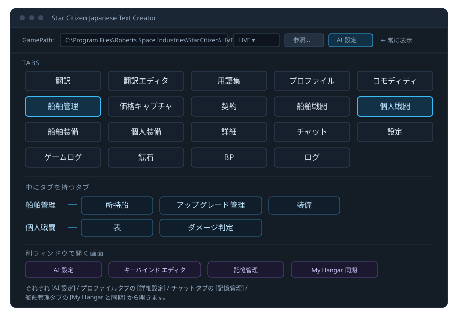
| タブ | 何をするところか |
|---|---|
| 翻訳 | ゲームを日本語にする。日本語化の本体（→ 5） |
| 翻訳エディタ | 訳文の検索・手直し・CSV 入出力（→ 7） |
| 用語集 | 固有名詞などの訳し方を固定する（→ 8） |
| プロファイル | キャラクターデザインとキーバインドの保存・復元（→ 9） |
| コモディティ | 交易ルートの検索と価格の確認（→ 11） |
| 船舶管理 | 所持船・アップグレード権利・装備・電力管理（→ 12） |
| 価格キャプチャ | ゲーム画面のターミナルを読み取って UEX へ送る（→ 13） |
| 契約 | 契約の一覧と詳細を調べる（→ 14） |
| 船舶戦闘 | 船の武器とミサイル・魚雷（ロケット・ロケットポッドを含む）を 1 つの表で比べる（→ 15） |
| 個人戦闘 | 個人武器を 1 つの表で比べる［表］と、アタッチメントを付けたときの値を出す［ダメージ判定］（→ 16） |
| 船舶装備 | 船の装備（パワープラント・クーラー・シールド・量子ドライブ・レーダー）を 1 つの表で比べる（→ 17） |
| 個人装備 | 個人装備（アーマー・服・道具・医療用具・武器の付属品など）の表と、所持個人装備の登録（→ 18） |
| 詳細 | 船・車両・武器・装備・鉱石・お店・ステーション・星系の詳細を名前で探して見る（→ 19） |
| マップ | Stanton・Pyro・Nyx の星系図と、ゲームの中の現在位置・量子ジャンプの線を見る（→ 20） |
| チャット | AI に日本語で質問する（→ 21） |
| 設定 | 保存先・サーバー・データベース管理（→ 24） |
| ゲームログ | Game.log から遊んだ局面を一覧にする（→ 25） |
| 鉱石 | 採掘・積み荷の資源の在庫と、売買・採掘の記録（→ 26） |
| BP | ブループリントの材料・入手・在庫との照合（→ 27） |
| ログ | 翻訳タブの処理の記録（→ 5） |
タブはドラッグで並べ替えられます。並び順と最後に見ていたタブは、次に起動したときも覚えています。
4最短セットアップ
まずはここだけやれば、ゲームが日本語になります。
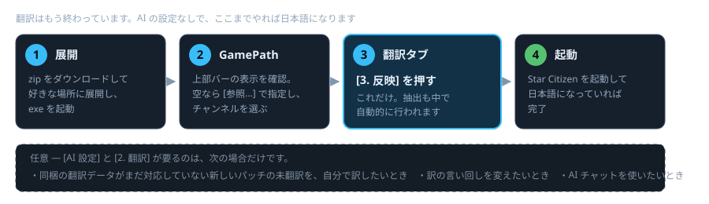
- アプリを起動します。上部の GamePath に Star Citizen のインストール先が自動で入っていることを確認します。空欄なら 参照... から選んでください（RSI Launcher のログから自動検出を試みます）。
- 右隣のコンボボックスで LIVE / PTU など、日本語化したいチャンネルを選びます。
- 翻訳 タブで 日本語化 を押し、オプションを選んで 実行 を押します。これだけです。
- Star Citizen を起動して、日本語になっていれば完了です。
ここまでで AI の設定は一切要りません。同梱の翻訳データ（Patch 4.10.2 対応）がそのまま当たります。新しいパッチで増えた分を自分で訳したい、あるいは訳を書き換えたいという段になって初めて、AI 設定 と AI翻訳 の出番です。
5翻訳タブ
ふだん押すのは 日本語化 だけです。
- 日本語化 を押します。
- 「ゲーム内で名前に以下を付けたい時は 下のオプションにチェックを付けてください」と出るので、付けたいものにチェックを入れます。
- 実行 を押すと、ゲームに書き出します。
| オプション | ゲーム内の表示例 |
|---|---|
| 装備名の後ろに分類を付ける | Bracer [軍1C] |
| 契約名に派閥と貢献度を付ける | トラッカーライセンス認定資格 [バウンティーハンターズ・ギルド +50] |
| 契約名に設計図を付ける | Orison救援：小規模製造依頼 [BP] |
最初は 1 つ目と 3 つ目にチェックが入っています。選んだ内容は次回も残ります。チェックを外して 実行 すれば、その表示は消えます。
| こんなとき | 押すボタン |
|---|---|
| 初めて日本語にする アプリを新しいバージョンに入れ替えた | 日本語化 だけ |
| ゲームにパッチが来て英語に戻った | 新しいパッチを読み取る → 日本語化 |
| 新しいパッチで増えた未翻訳を自分で訳したい 訳の言い回しを変えたい | 新しいパッチを読み取る → AI翻訳 → 日本語化 |
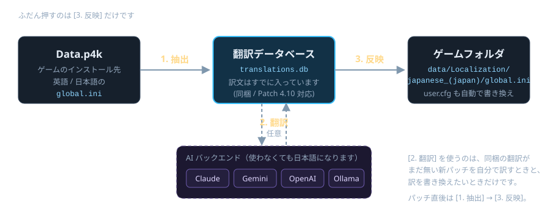
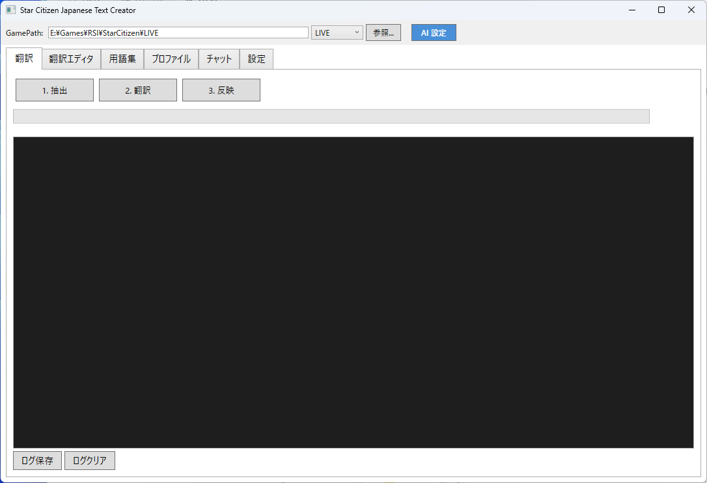
| ボタン | やっていること |
|---|---|
| 日本語化 | 翻訳データベースの内容を global.ini にまとめ、ゲームフォルダの data/Localization/japanese_(japan)/global.ini にコピーします。user.cfg の g_language も書き換えます。ゲームから読み取ったファイルがまだ無ければ、先に読み取ります。 |
| 新しいパッチを読み取る | ゲームの Data.p4k から英語と日本語の global.ini を読み取り直して、翻訳データベースに登録します。パッチのあとに押します。ゲームの版が読めたときは、ボタンの文字が 4.10.2 LIVE を読み取る のように版とチャンネルになります（下の「読み取りボタンの版とチャンネル」）。 |
| AI翻訳 | ふだんは押しません。まだ訳されていない行を、AI 設定でチェックを入れた AI に翻訳させます。 |
| AI翻訳での名前と訳の扱い | 内容 |
|---|---|
| 地名・船名・武器・装備の名前 | 英語のままにします（ゲーム中の文字とアプリの文字をそろえるため）。名前の行は AI に送りません。前の版で AI が訳した名前は、アプリの起動時に英語に戻します（ログに「[名前] AI 訳の名前を英語に書き戻しました」と出ます）。手動・CSV・用語集・公式で入った訳は変えません |
| 文の中の名前 | 文の中に出てくる地名・船名・品名は {name1} {name2}… に置き換えて AI に送り、返ってきた訳で元の英語名に戻します。置き換えの記号が欠けた・余計にある・壊れた訳は保存しません |
| AI の訳の検査 | 原文にある ~mission(…) などの記号、文字としての改行 \n、%s などの書式の記号、@xxx の記号、強調タグが欠けている・数が違う訳は保存しません（次の AI翻訳 でまた訳します） |
| 人名・愛称 | 原文のまま（英語の綴りのまま）にします。AI が見つけた人名は覚えておき、次から文の中の名前と同じく {nameN} に置き換えて送ります |
処理中は 中止 ボタンが現れ、下の進行バーと 1 行の表示で進み具合が分かります。詳しい記録は ログ タブ（設定 タブの右）に出ます。保存 でファイルに残し、クリア で消せます。
書き出し先の言語フォルダ名は 設定 タブの Output Language で変えられます。既定は japanese_(japan) です。
読み取りボタンの版とチャンネル
読み取りのボタンには、ゲームの版とチャンネルが出ます（例 4.10.2 LIVE を読み取る）。版はチャンネルのフォルダの build_manifest.id から読みます。読めないときは今までどおり 新しいパッチを読み取る と出ます。
- 新しい版が LIVE・PTU にあるとき、ボタンが黄色になります。前に読み取った版より新しい版が入っているチャンネルを、ボタンの文字に出します（選んでいるチャンネルが新しければそれ、違えば LIVE を先に出します）。押すと、そのチャンネルに切り替えてから読み取ります。
- 上の GamePath バーのチャンネルのリストには、LIVE と PTU が必ず並びます。
Data.p4kの無いチャンネルは灰色になり、選べません。 - ボタンの文字は、アプリの窓が前に来たときに読み直します。
チャットのコマンドは英語のまま
/party・/addfriend などのチャットのコマンドの名前は、日本語にせず英語のまま書き出します。日本語にするとゲームでコマンドが通らないためです。前の版で日本語化した方は、日本語化 → 実行 をもう一度行うと反映されます。
装備名の分類 — 分類・サイズ・グレードが名前で分かる
装備名の後ろに分類を付ける にチェックを入れて 実行 すると、ゲーム内の装備名の後ろに [軍1C] のような印が付きます。名前を見ただけで分類とサイズとグレードが分かります。
| 印 | ゲーム内の表記 |
|---|---|
| 産 | Industrial |
| 軍 | Military |
| 市 | Civilian |
| 隠 | Stealth |
| 競 | Competition |
漢字のうしろの数字がサイズ、英字がグレードです。[軍1C] なら「軍用のサイズ 1、グレード C」です。分類はアイテムの説明文にある Class: の行から取っているので、ゲームが持っている情報そのままです。
印が付くのは、分類を持つ装備 472 品目です。パワープラント、シールド、クーラー、量子ドライブ、レーダーなどが対象で、分類を持たない船舶武器や個人装備には付きません。
契約名に設計図を付ける にチェックを入れると、設計図（ブループリント）がもらえる契約の名前のうしろに [BP] が付きます。Shubin の採掘発注や Wikelo のレシピなど 12 件です。
装備名の印には色を付けていません。機体ロードアウトマネージャーの装備名欄はゲームの強調タグを解釈せず、<EM4> という文字がそのまま見えてしまうためです。契約名の印だけ色が付きます。
契約名の派閥と貢献度 — 受ける前に分かる
契約名に派閥と貢献度を付ける にチェックを入れて 実行 すると、契約名の後ろに [バウンティーハンターズ・ギルド +50] のような印が付きます。どの派閥の評価がいくつ上がる依頼なのか、受ける前に分かります。
初回はデータの取り込みに 30 秒ほどかかります。装備データを再抽出 を実行したときにも一緒に取り込まれます。
同じ名前の契約がまとめて扱われることがあります。ゲーム側で契約名が使い回されているためで、その場合は [+50/100/200] のように取り得る値を並べます。派閥が複数に割れるときは派閥名を出さず、値だけを出します。英語圏の同種の MOD も同じ作りです。
6AI 設定 — 翻訳バックエンドの登録
日本語にしたいだけなら、この章は飛ばして構いません。翻訳データは同梱されているので、AI の登録なしで 日本語化 → 実行 だけで日本語になります。ここが必要になるのは、新しいパッチの未翻訳を自分で訳したいときと、AI チャットを使いたいときです。
上部バーの AI 設定（または 設定 タブの AI 設定を開く）で、翻訳とチャットに使う AI を登録します。
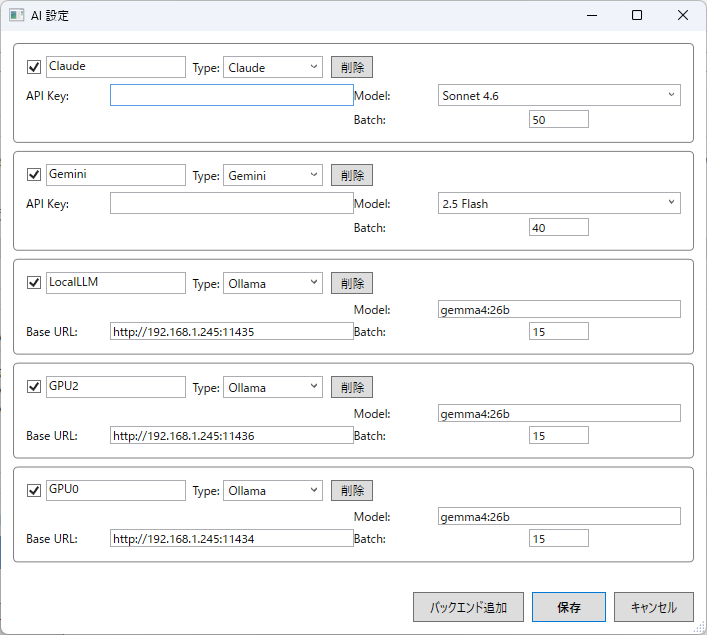
- バックエンド追加 で行を増やします。
- 種類（Claude / Gemini / OpenAI / Ollama）、API キー、モデル名を入れます。
- 翻訳に使いたいものだけチェックを入れます。
- 保存 で閉じます。
チェックボックスは「翻訳に使うかどうか」の選択です。チェックを入れたバックエンドが同時に走ります。チャットで使うバックエンドは、チャットタブ側のコンボボックスで別に選びます。
ダイアログの下の E2B / E4B を翻訳に使う は、モデル名に gemma4:e2b / gemma4:e4b を含むバックエンドを AI翻訳 に使うかの設定です。最初はチェックが外れています（使わない）。
- チェックが外れていて、ほかに翻訳に使うバックエンドがあれば、聞かずに E2B / E4B を除いて翻訳します。
- チェックを入れているとき、または翻訳に使えるのが E2B / E4B だけのときは、翻訳の前に「E2B / E4B を翻訳に使いますか？」と聞かれます。いいえ なら E2B / E4B を除いて翻訳します（ほかに使えるバックエンドが無ければ翻訳しません）。
| バックエンド | 性格 | 必要なもの |
|---|---|---|
| Claude (Anthropic) | 高品質な翻訳 | API キー（取得方法） |
| Gemini (Google) | 高速・大量処理向き | API キー（取得方法） |
| OpenAI (ChatGPT) | 高品質・バランス型 | API キー（取得方法） |
| Ollama (ローカル) | 無料・オフライン対応。API キー不要 | Ollama ＋ Gemma4（下で説明） |
Ollama（ローカル・無料）で翻訳させる
API キーを使いたくない場合は、自分の PC で動く Ollama を使えます。モデルは Gemma4 の e2b / e4b がおすすめです。翻訳に使うときは、AI 設定 の E2B / E4B を翻訳に使う にチェックを入れてください（最初は外れていて、ほかに翻訳に使うバックエンドがあると E2B / E4B を除いて翻訳します）。
| モデル | 性格 | ファイル サイズ | 推奨 VRAM | 推奨 RAM | 手順 |
|---|---|---|---|---|---|
gemma4:e2b |
軽量・高速 まずはこちら |
7.2GB | 8GB 以上 | 12GB 以上 | e2b インストール手順 |
gemma4:e4b |
高品質 VRAM に余裕があれば |
9.6GB | 12GB 以上 | 16GB 以上 | e4b インストール手順 |
- Ollama をインストールします。
https://ollama.com/download からインストーラーをダウンロードして実行します（詳しい手順）。 - モデルをダウンロードします。コマンドプロンプトか PowerShell で次のどちらかを実行します。
ollama pull gemma4:e2bollama pull gemma4:e4b - AI 設定 に入力します。
項目 入力値 Type Ollama Model gemma4:e2bまたはgemma4:e4b（ダウンロードした方）Base URL http://127.0.0.1:11434（同じ PC で動かす場合）Batch 既定値のままで構いません - チェックボックスをオンにして 保存 します。
ゲームをしながらの翻訳には向きません。Ollama は GPU の VRAM を使います。Star Citizen も VRAM を大量に使うため、ゲームプレイ中に翻訳やチャットを実行するとゲームのパフォーマンスが落ちることがあります。ゲーム中は避けるか、軽い gemma4:e2b を使うか、別 PC の Ollama に接続してください（Base URL を http://192.168.x.x:11434 に変えます）。Claude / Gemini などのクラウド API なら VRAM への影響はありません。
翻訳がパースエラーで失敗する場合（ログに「パース失敗 (0行)」と出る場合）は、Ollama のコンテキスト長不足が原因のことがあります。環境変数 OLLAMA_NUM_CTX=8192 を設定するか、Batch を 1〜5 に減らすと改善することがあります。
7翻訳エディタ — 訳文の確認と手直し
AI の訳が気に入らないときや、特定の語を探したいときに使います。
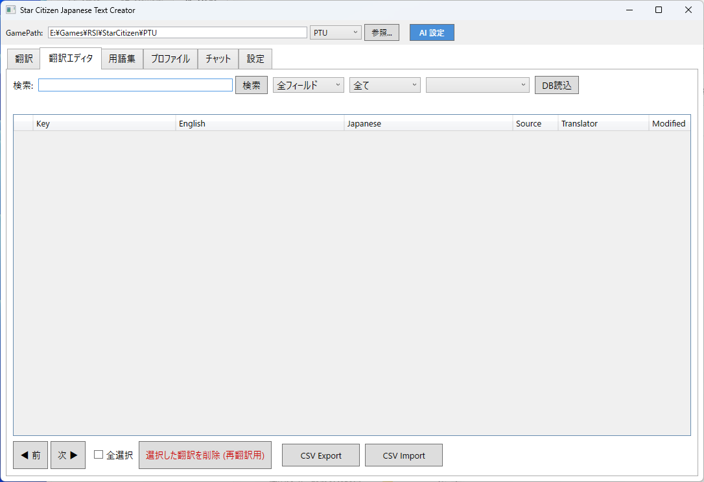
探す
- 検索欄に語を入れて 検索。部分一致（既定でオン）を外すと完全一致になります。
- 検索欄の右に並ぶコンボボックスで検索対象を 全フィールド / Key / English / Japanese から選べます（画面上にラベルはありません）。
- その隣のソース絞り込みで、訳がどこから来たのかで絞れます。
official— ゲーム同梱の公式日本語ai— AI が訳したものmanual— 手で直したものcsv— CSV から取り込んだものglossary— 用語集の一括置換によるものoriginal— 原文のままにしたものuntranslated— まだ訳されていないもの
- さらに右のコンボボックスでは、どの AI が訳したかで絞り込めます。
- 件数が多いときは ◀ 前 次 ▶ でページを送ります。
直す
- 一覧の Japanese 列を直接書き換えると、そのレコードは
manualになり、以降の再翻訳で上書きされません。同梱 DB で作り直したときも、手で直した訳は引き継がれます。 - 選択した翻訳を削除 (再翻訳用) — 訳文を消して未翻訳に戻します。次の AI翻訳 で訳し直されます。
- 全て原文 — 選んだ行を英語のまま表示させます。訳すとかえって分かりにくい用語に使います。
- CSV Export / CSV Import — 表計算ソフトでまとめて直したいときに。
8用語集 — 訳し方を固定する
船名・地名・企業名など、毎回同じ訳になってほしい語を登録します。以降の AI 翻訳はこの対訳を守るようになります。
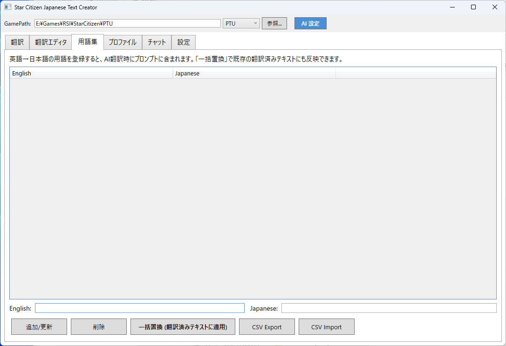
- English: と Japanese: に入れて 追加/更新。
- 一括置換 (翻訳済みテキストに適用) — すでに訳し終わっているテキストにも、登録した対訳を当て直します。用語を後から追加したときに使います。
- 全選択 と 選択削除 でまとめて消せます。
- CSV Export / CSV Import で用語集の持ち出し・持ち込みができます。
英語のまま残したい語は用語集ではなく 全て原文 を使います。用語集は AI に「この英語はこの日本語で訳して」と指示するための仕組みなので、英語のまま残したい語は 翻訳エディタでその行を選んで 全て原文 を押すほうが確実です。
9プロファイル — バックアップと復元
パッチのたびに消えがちなキャラクターデザインとキーバインド設定を、名前を付けて保存しておけます。
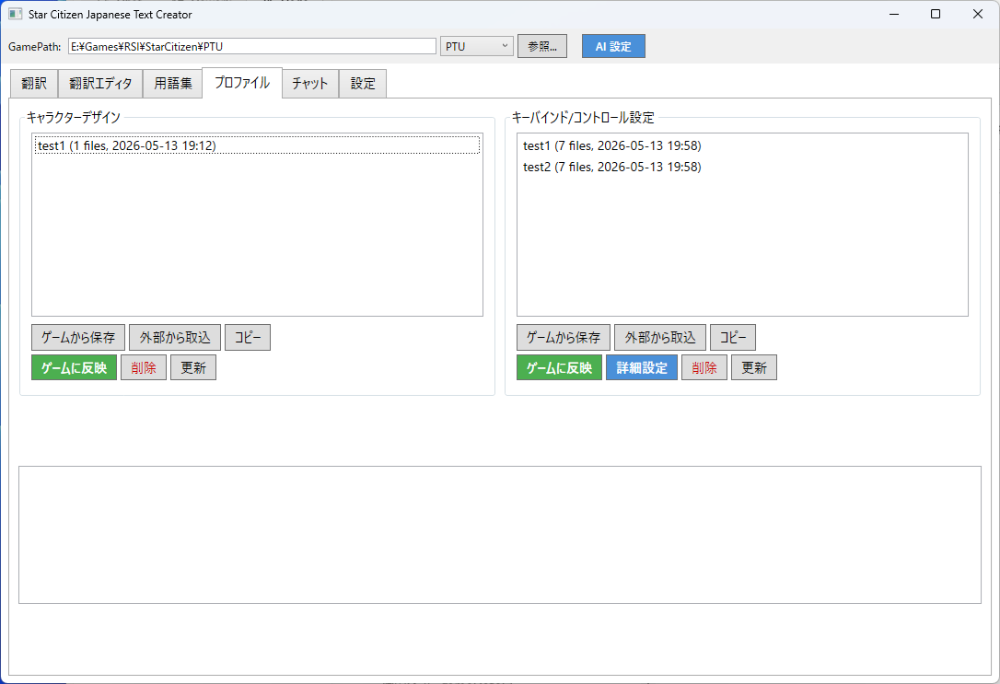
| ボタン | 動き |
|---|---|
| ゲームから保存 | 今ゲームに入っている設定を読み取って、プロファイルとして保存します。 |
| 外部から取込 | 他の場所にあるファイル（フォルダを指定）を取り込みます。 |
| コピー | 選んだプロファイルを複製します。試す前の退避に。 |
| ゲームに反映 | 選んだプロファイルをゲーム側に書き戻します。 |
| 詳細設定 | キーバインド側のみ。キーバインドエディタを開きます。 |
10キーバインドエディタ
プロファイルタブの 詳細設定 から開きます。機能別 / キーボード / マウス / コントローラー / HOTAS の 5 タブに分かれています。
機能別タブ — 一覧から探して割り当てる
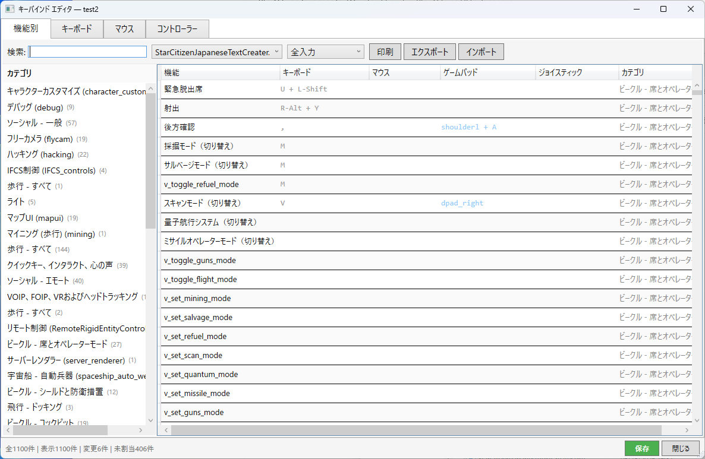
- 入力種別のコンボボックスで 全入力 / キーボード / マウス / ゲームパッド / HOTAS / 未割当のみ / 変更済みのみ に絞り込めます。
- 行をダブルクリックすると「バインディング編集」の窓が開きます（下の節）。
- 右の表で機能を選ぶと、左のカテゴリの一覧で、その機能のカテゴリが水色になります（カテゴリの選択と絞り込みは変わりません）。
- 翻訳データベースと連動しているので、機能名を日本語で読めます。
- 印刷 でチートシートとして紙に出せます。エクスポート / インポート で設定の持ち運びもできます。
デバイス別タブ — 絵の上で確認する
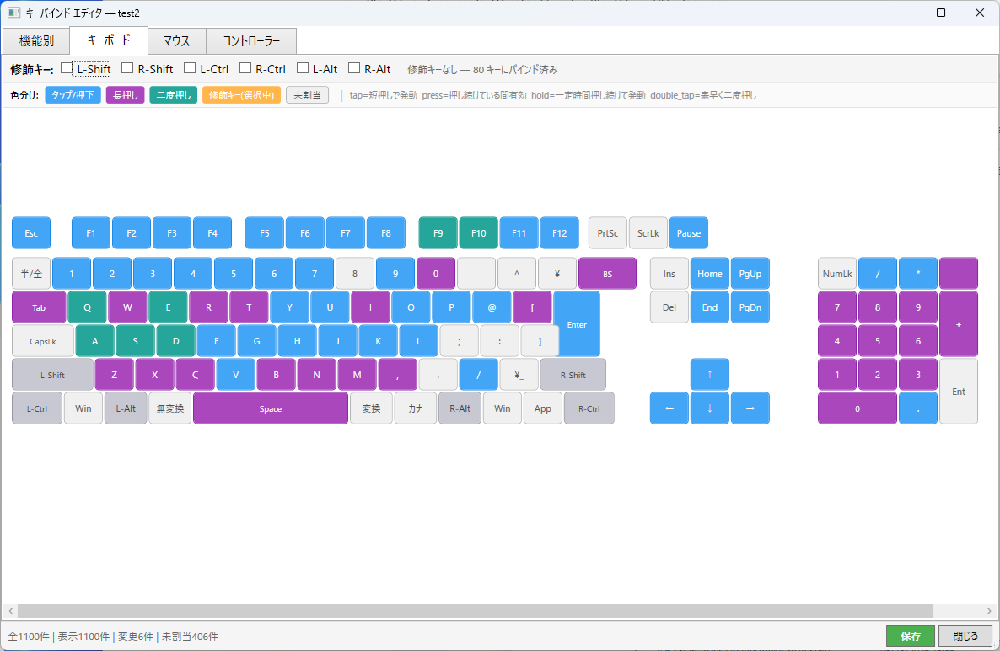
- キーや軸の上に、いま何が割り当たっているかが表示されます。
- activation mode（押した瞬間 / 長押し / ダブルタップ など）が色分けされます。
- キーをクリックすると、その場で割り当てを変更できます。
- 変更したら 保存 を忘れずに（下の「保存」の節）。
HOTAS・ゲームパッドを押して探す
- HOTAS タブで HOTAS のボタンやハットを押すと、その入力の行がオレンジの枠で光り、行の所までスクロールします。上の 修飾キー:（右Ctrl / 左Shift / 右Shift）にチェックを入れていれば、その修飾キー付きの行が光ります。
- 表に無い番号（ボタン 33 以降、ハット 3 以降）を押すと、表の最後の 表に無い入力 (押したもの) の組に、その行が足されます（エディターを開き直すと消えます）。
- コントローラー タブでゲームパッドのボタンを押すと、図の上のそのボタンが赤い枠で光ります。
- 機能別 タブでスティックやゲームパッドのボタン・ハットを押すと、その入力が割り当ててある機能の行へ移ります。
- 当たる行は全部オレンジの枠で光ります。並びは修飾キー無しが先で、修飾キー付きの割り当ても当たります。
- 同じボタンを続けて押すと次の行へ移り、最後の次は最初に戻ります。
- 行が絞り込みで見えないときは、検索・カテゴリ・入力の種類の絞り込みを外してから移ります。
- 下の欄の件数の後ろに「（機器の名前） — ボタン22 (js1_button22): 3 件中 1 件目 (（機能名）)」と出ます。割り当てが無い入力なら「…: この入力の割り当てはありません」です。
- js 番号が分からない機器を押したときは、下の欄に「（機器の名前） （入力）: どの js 番号か判別できません」と出て、その右に「この機器は:」と js1 (HOTAS L) js2 (HOTAS R) が出るので、選んでください（L / R は左右のスティックの設定に従います）。
- 手で js 番号を選んだ機器は、押すたびに同じ js1 js2 が出るので、選び直せます。
- 「バインディング編集」などの窓を開いている間は、エディターの表は光りません（押した入力は開いている窓のほうで使います）。
バインディング編集 — 押して割り当てる
機能別 タブで行をダブルクリックすると開きます。現在のバインド の機器の欄をクリック（または Tab で移る）か、その欄の 設定 を押して機器を選び、下の一覧から入力を選んで割り当てます。一覧から選べるジョイスティックのボタンは Btn 1〜Btn 128 です（ほかに軸・スライダー・Hat1・Hat2）。
- 選んだ欄には赤い枠が付きます。開いた直後はどの欄も選んでいないので、下の一覧は出ず、クリア も押せません。
- 下の「設定:」の行には、選んでいる機器の今の割り当てが出ます（割り当てが無い・解除したときは「設定: なし」）。
- クリア は、選んでいる欄（赤い枠）の割り当てを消します。窓には「割り当てを削除するときは、消したい機器の欄をクリックして選び（赤い枠が付きます）、［クリア］を押してください。」と出ています。
- 窓を開いたまま ゲームパッドか HOTAS の入力を押すと、黄色の確認欄が出ます。押された入力（HOTAS の js 番号が分かっていれば、機器の名前は actionmaps.xml の機器の名前。例
VKBsim Gladiator EVO L）、この機能の（機器）の今の割り当て（解除した割り当ては「なし」）、この入力を使っている他の機能 が並びます。修飾キー: のチェックは、押した入力に付けて出ます。 - 反映 で、押した入力をその機器の欄に入れます。キャンセル で何もせずに確認欄を閉じます。窓の OK で確定します。
- 「この入力を使っている他の機能:」は 1 機能 1 行で、各行の右に 変更 削除 があります。
- 削除 — その機能の、押した入力の機器の割り当てを消します。
- 変更 — 「割り当ての変更」の窓が開き、「「（機能名）」を割り当てるボタンを押してください。」と出ます（機器・今の割り当てと、修飾キーがあれば「(修飾キー … は引き継ぎます)」も出ます）。同じ機器（HOTAS は同じスティック）のボタンかハットを押すと、押した入力と「割り当て済みの機能:」が出ます。反映 でその機能をそのボタンに変え（修飾キーは引き継ぎます）、中止 では変えません。別の機器の入力は「別の機器の入力です。…のボタンを押してください。」（別のスティックなら「別のスティック (…) の入力です。…」）と出て受け付けません。
- どちらもその場では変えず、予定として行に「→ 削除」「→ （入力） に変更」と出ます。予定は行の 取消 で取り消せます。
- 確認欄を閉じても予定は残り、窓の下に「ほかの機能の変更・削除の予定: N 件 (［OK］で確定し、［キャンセル］で取り消します)」と出ます。バインディング編集の OK で確定し、キャンセル で取り消します。
js 番号が分からない機器
押した HOTAS が js1 か js2 かは、保存データの actionmaps.xml の機器の定義（options の Product）から決めます。決められない機器を押すと「どの js 番号か判別できません」と出て、この機器は: の js1 (HOTAS L) / js2 (HOTAS R) のボタンで手で選べます（L / R は今の HOTAS の左右の選択で変わります）。HOTAS タブとバインディング編集のどちらでも選べます。
- 選んだ番号は、その保存データの機器の定義ごとに作業フォルダに覚えます。
- 手で選んだ番号の機器を押したときは、HOTAS タブに「手で選んだ js◯ として表示しています」、バインディング編集に「(js◯・手で選んだ番号)」と出て、選び直すボタンも出ます。
HOTAS の左右
HOTAS の左右（どちらが HOTAS L / HOTAS R か）は、機器の名前からは決めず、利用者の選択で決めます。
- 左右をまだ選んでいない保存データで、actionmaps.xml にスティックが 2 本以上あると、エディターを開いたときに「HOTAS の左右」の窓が出ます。左右の表示だけが変わり、ファイルは変わりません。
- 「左スティックのボタンをどれか押してください。」と出るので、左手のスティックのボタン（かハット）を押します。
- 押したスティックが左、もう一方が右の枠で並びます。枠には大きく Stick1 / Stick2（js1 / js2）、その下に機器の名前が出ます。
- 「左右のスティックのボタンを押して確認してください。」と出ます。左右のスティックのボタンを押すと、押した側の枠がオレンジに光ります。
- 左右が違っていれば 入れ替え、よければ OK を押します。最初のボタンを押すまでは、OK と 入れ替え は押せません。
- どのスティックか分からない機器を押すと、「どのスティックか分かりません (機器の名前)。このスティックは:」と Stick1 Stick2 が出ます。選ぶと、その番号を覚えて続けます（エディターの「この機器は:」と同じ記録です）。
- エディターを開いたときに出た窓で OK を押すと、「あとで［HOTAS］タブの［左右を設定…］（ボタンを押して設定し直す）か［表示の入れ替え］（左右を反転する）で変えられます。」と出ます。選んだ左右は、保存データの機器の定義ごとに作業フォルダに覚えます。
- 中止（または窓を閉じる）では何も保存しません。エディターを開いたときに出た窓なら、今回は js1 = 左手・js2 = 右手 で表示し、次に開いたときにまた聞きます。窓には「スティックを接続していないときは［中止］を押してください (あとで［HOTAS］タブの［左右を設定…］で設定できます)。」と出ています。
- HOTAS タブの 左右を設定… でも、この窓を開いて設定し直せます（左右を選んだあとでも開きます）。ここから開いたときは、OK のあとの知らせは出ません。
js1 と js2 の入れ替え
HOTAS タブの上には 表示の入れ替え 左右を設定… js1/js2 の入れ替え の順にボタンが並びます。左右を設定… は上の「HOTAS の左右」の窓を開きます。入れ替えのボタンは次の 2 つです。
- 表示の入れ替え — HOTAS の左右の選択（js1 = 左手・js2 = 右手 か、js1 = 右手・js2 = 左手 か）を反転するだけです。表示だけで、ファイルは変わりません。選んだ左右は、保存データの機器の定義ごとに作業フォルダに覚えます。
- js1/js2 の入れ替え — 確認のあと、全ての機能の js1 と js2 の割り当てを入れ替えます。割り当てといっしょに、activation mode と既定の割り当ても入れ替わります（デフォルトに戻す は入れ替えた後の既定を入れます）。保存すると、actionmaps.xml の joystick の instance="1" と instance="2" の設定（Product など）も入れ替わります。物理スティックの左右は変わらないので、HOTAS の左右の選択も反転します。2 回押すと元に戻ります。
js1/js2 の入れ替えを保存すると、入れ替える前の js1 の機器を作業フォルダに記録します（記録が無いときだけ）。次に保存データを開いたとき、js2 がその機器で js1 がそうでなければ入れ替え済みとして、既定の割り当てと既定のモードを左右入れ替えて使います。記録が無い、機器の定義が無い、js1 と js2 が同じ機器、どちらにも当たらない、のときは入れ替えていないものとして扱います。
- 記録が無くても、次のときは記録せず、そのことを知らせるだけです。前に記録のファイルが壊れたことがあり、控え（
.broken-*）が残っているとき（控えを直して元の名前に戻すか、控えを消すと、次に入れ替えを保存したときに記録します）。保存データの options に js1 / js2 の機器（Product）が書いていないか、js1 と js2 が同じ機器のとき。 - 記録があっても、保存したデータの機器と合わないときは、記録は変えずに「入れ替え済みかを決められません」と知らせます。
- HOTAS タブに「元の js1 の機器: （名前） （VID:PID など）」と、この保存データの判定が出ます。記録が無ければ「元の js1 の機器: 記録なし (js1/js2 の入れ替えを保存したときに記録します)」、入れ替えが保存待ちのときは「元の js1 の機器: 記録なし (保存すると、入れ替える前の js1 の機器を記録します)」と出ます。
- 記録を消す — 確認のあと、元の js1 の機器の記録を消します。消すと、どの保存データも入れ替えていないものとして扱い、次に js1/js2 の入れ替えを保存したときに記録し直します。記録が無いときは押せません。
割り当ての解除
- 割り当ては、キーやボタンの割り当ての窓の 解除（確認のあと）や、バインディング編集の クリア（選んでいる欄の割り当て）で解除します。
- 解除した割り当ては、画面では空になります（機能別 タブの HOTAS の欄では、解除した側の行は出ません）。ゲームの解除の書き方（機器の接頭辞と空白。
kb1_、js1_など）で持ち、保存すると actionmaps.xml にその書き方で書きます。 - 解除した割り当ては、バインドの数や、入力種別の絞り込み（キーボード / マウス / ゲームパッド / HOTAS）では割り当て無しとして数えます。未割当のみ では、解除した機能も出ます。
保存 — 上書き保存と新規作成
窓の下の 保存 を押すと、保存方法を選ぶ窓が出ます。
| ボタン | 動き |
|---|---|
| 上書き保存 | 開いている保存データの actionmaps.xml の割り当てだけを書き換えます。 |
| 新規作成 | 開いている保存データを複製した新しい保存データに書き込みます。名前を聞かれます（空白は全角も使えません。フォルダ名に使えない文字を含む名前と「.」「..」は「「◯◯」はフォルダ名に使えません。」と出て断られます。同じ名前が既にあれば作りません）。保存のあとは、新しい保存データを開いた状態になります。 |
| キャンセル | 保存しません。 |
保存しただけではゲームには入りません。プロファイルタブの ゲームに反映 で書き戻します（→ 9）。
11コモディティ — 交易ルートを探す
UEX の価格データを元に、どこで何を買ってどこで売れば一番儲かるかを計算します。
ルートを探す
- 船: を選ぶと 積載 (SCU) が自動で入ります（所持船に登録した船が候補に出ます）。
- 予算 (aUEC)、買い星系: / 売り星系:（全て / Stanton / Pyro / Nyx）を指定します。
- 必要なら コモディティ選択 (全て) で扱う商品を絞ります。
- 絞り込みのチェックを調整します。
- 地上小規模拠点を除く（既定でオン）— 着陸が面倒な小拠点を候補から外します
- 外部積込対応のみ (Hull C等) — 外部グリッドに積む船向け
- 在庫不足ルートを除く — 在庫が足りない拠点を外します
- ルート検索 を押します。価格が古いと感じたら 価格更新 で取り直します。
拠点ごとに見る
結果の行を選ぶと 購入場所 (安い順) と 売却場所 (高い順) の詳細が開き、差益と相手先がわかります。閉じるときは ✕ を押します。
価格は UEX に集まったプレイヤーの報告です。実際のゲーム内価格と食い違うことがあります。ずれを見つけたら 価格キャプチャ から報告できます。
12船舶管理 — 所持船・アップグレード・装備・電力管理
このタブの中に 所持船 アップグレード管理 装備 電力管理 の 4 つがあります。
所持船 — 持っている船を登録する
ここに登録した船は、コモディティタブの船セレクタにも出てきます。
- 手で追加する場合 — 船を追加 の 検索: に船名を入れて 検索、候補から選んで 追加。aUEC で買った船は ゲーム内購入 (aUEC) にチェックを入れます。
- まとめて取り込む場合 — My Hangar と同期（下で説明）のあと 同期した船を所持船に反映。手で入れた分は保護されます。
- 各行の アップグレード / 装備 ボタンから、それぞれのタブへ飛べます。
- 船名（1 列目）をダブルクリックすると、詳細 タブでその船を開きます（→ 19）。船の品目が決まらないときは、詳細 の名前の欄に船名を入れて検索した状態で開きます。
- 船名以外の列をダブルクリックすると、その船が 船を追加 の入力欄に読み込まれて編集できる状態になり、同時に 装備 タブの 現在の装備 もその船に切り替わります（表示中の画面は所持船のままです）。メーカー欄が空でも船名から自動で判別します。
- ワイプ を押すと、サーバーワイプで無くなる船を選んでまとめて削除できます。ゲーム内 (aUEC) で買った船には既定でチェックが入り、pledge の船は既定で外れます。Wikelo の報酬などワイプ後も残る船はチェックを外してください。
- 船名は 3 文字以上入力すると候補が出ます。一覧から選ぶか、そのまま打ち込んでも構いません。
- メーカーは船名を入れた時点で自動で埋まります。一覧から選び直すことも、直接入力することもできます。登録済みの船でメーカーが空のものは、所持船タブを開いたときに自動で埋まります。
- ローナー 列に、その船を持っていると借りられる機体が出ます。まだ飛べない船を持っている場合、代わりに使える機体がここで分かります。一覧は UEX から取り込んでいます。
My Hangar 同期 — RSI アカウントから読み取る
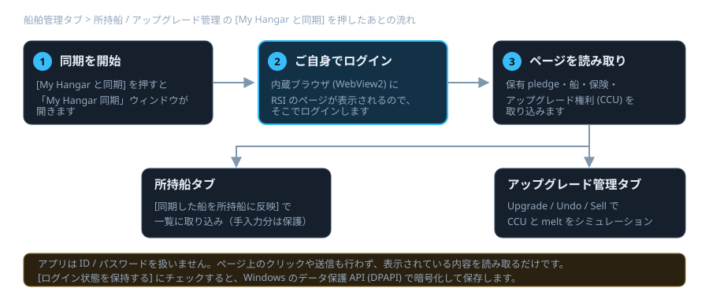
- My Hangar と同期 を押すと「My Hangar 同期」ウィンドウが開きます。
- 内蔵ブラウザ (WebView2) に RSI のページが出るので、そこでご自身でログインします。
- 同期開始 で、保有 pledge・船・保険・アップグレード権利 (CCU) を読み取ります。
- 次回から入力を省きたい場合は ログイン状態を保持する にチェックを入れます。
アプリは ID / パスワードを扱いません。ページ上のクリックや送信も行わず、表示されている内容を読み取るだけです。ログイン状態を保持する を使う場合、ログイン情報は Windows のデータ保護 API (DPAPI) で暗号化して保存されます（このユーザーアカウントでしか復号できません）。
アップグレード管理 — CCU と melt を試算する
保有している船と、使えるアップグレード権利 (CCU) の対応を一覧します。実際に RSI 側で何かを実行するわけではなく、手元でのシミュレーションです。
- Upgrade で権利を当ててみて、連鎖させ、Undo で戻せます。シミュレーションをリセット で全部戻します。
- 権利（CCU）の色は 緑 = いま使える、紫 = このシミュレーションで適用中、灰 = 使用不可（元の船を持っていない、または売却予定にした船が起点）です。船の行が灰色になっているものは、使える権利が無く適用もしていない船です。
- Sell で pledge 単位の売却 (melt) を試算します。現在の Store Credit、売却で得られる Credit、失う機体、LTI 喪失警告、Buy Back の残トークンが表示されます。
- 販売中の船 (RSI ストア) を開くと、いま売られている船・パック・アップグレードが見られます。Warbond のみ で絞り込めます。情報が古ければ ストア情報を更新。船/商品 の欄をダブルクリックすると 詳細 タブで開きます（→ 19）。船の品目が決まらないとき（船でない商品を含む）は、詳細 の名前の欄にその名前を入れて検索した状態で開きます。
- プランナー / melt シミュレーション では、船ごとに「要る / 要らない / 保留」を付けて 提案を計算 したり、目標価格から逆算したりできます。
装備 — 持っているコンポーネントと船の装備
- 所持コンポーネント に、パワープラント / シールド / クーラー / 量子ドライブ / 船舶武器などを、使用可のチェックや数量を含めて登録します。
- 現在の装備 で船を選び、ポートごとに何を積んでいるかを設定します。設定していないポートは「現在」列にも初期装備がそのまま表示されます（灰色の文字）。自分で設定したポートだけが青い太字になり、行の背景も青くなります。
- 所持船 の行の船名以外の列をダブルクリックするか、行の 装備 ボタンを押すと、その船の装備をここで開けます。
- どこで買えるかを知りたいときは、装備の名前にマウスを乗せます。デフォルト / 現在 列、装備を設定 の候補、所持コンポーネント の名称、どれのツールチップにも UEX の購入場所と価格が出ます。
- 購入先はアプリの起動後にバックグラウンドで取り込みます。まだ取れていない間は 取得中… と出ます。船に最初から付いている装備は店で売られていないことが多く、その場合は 購入先の登録がありません と出ます。
- 全てデフォルトに戻す で初期装備に戻せます。
- 装備の表・所持コンポーネントの表・船名のツールチップは、裏で読み込みます。データベースが使用中のときは「読み込み中... ({名前} が使用中のため待っています)」、時間がかかっているときは「読み込み中... (時間がかかっています。{名前} が使用中なら、空くまで待ちます)」と出て、空いたら自動で読み直します（{名前} は gamedata_cache.db など。分からなければ DB）。読み込みの間、装備の表と所持コンポーネントの表はクリックできず、選択を削除 品質を入力 も押せません。別の船を選ぶと、前の船の行はすぐに消えます。
- 所持コンポーネントの使用可や数量を変えたとき、その行が既に無かった（読み込みでほかの行にまとめられた、など）ときは、変更は入らず、状態の欄に「「（品名）」の行が既に無かったため、使用可の変更は入りませんでした」（数量のときは「数量の変更は入りませんでした」）と出て、表を読み直します。
- 設定した内容は、船名にマウスを乗せたときのツールチップにも反映されます。
- 所持コンポーネント の 名称、現在の装備 の デフォルト / 現在 の装備名をダブルクリックすると、詳細 タブにその品目を出します。
- 船のゲームデータにある既定の装備は、詳細 タブで船・車両を開くと 【船・車両】 の下に表で出ます（→ 19）。
自作したコンポーネントの品質 — 品質 の列と 品質を入力
クラフトで作った部品は、材料の品質で性能が変わります。所持コンポーネント には、材料の枠ごとの品質（0〜1000）を登録できます。
- 品質 の列は、全部の枠が同じ品質なら
Q950のように、枠ごとに違えばQ 枠ごとと出ます。品質を入れていない行は空です。 - 行を選んで 品質を入力 を押すと「品質」の窓が開きます。このボタンは、選んだ部品の BP（ブループリント）に品質の増減があるときだけ押せます。BP のデータは設定タブの インデックス構築、または起動後に裏で行う取り出しで入ります（→ 27）。起動後の取り出しが終わると所持コンポーネントの一覧も読み直すので、そこから押せるようになります。
- 窓には、BP の材料の枠ごとに、枠の名前・品質の入力欄・その枠で変わる性質が並びます。全部の枠に同じ品質: に数を入れて 当てる を押すと、全部の枠にその品質が入ります。品質は 0〜1000 の整数だけを入れられます（ほかの値では「品質は 0〜1000 の整数で入れてください」、枠の欄なら「（枠の名前）: 品質は 0〜1000 の整数で入れてください」と出て閉じません）。
- 少なくとも 1 枠に品質を入れたときは、空の枠は品質 500（ゲームデータの既定の品質）として計算します。全部の枠を空のまま OK を押すと、品質なしにする と同じ（品質なし）になります。
- 数量が 2 以上の行では 品質を入れる数: が出ます（既定は全部）。全部より少なくすると、その数だけ別の行に分けて品質を入れます。数が 1〜数量の整数でないと「品質を入れる数は 1〜（数量） の整数で入れてください」と出て閉じません。品質なしにする もこの数に従い、全部より少なければ、その数だけが品質なしの別の行になります。
- 入れた品質がもとの行と同じなら、行は分かれません。分けた数は、同じ部品・同じ使用可・同じ品質の行が既にあれば、その行の数量に足されます。
- 同じ部品でも、品質が違えば別の行になります（同じ部品・同じ使用可・同じ品質の行は 1 行にまとまります。まとめると数量は合計され、メモは「 / 」でつながります）。
- 品質なしにする で品質を消します。OK で保存、キャンセル で何もしません。
- 窓を開いている間にその行の数量が変わっていたときは、品質の変更は入らず、状態の欄に「「（品名）」の数量が ×（窓の数量） から ×（今の数量） に変わっていたため、品質の変更は入りませんでした」と出て、表を読み直します。行が既に無かったときは「「（品名）」の行が既に無かったため、品質の変更は入りませんでした」と出ます。読み込みの間は 品質を入力 を押せません。
- 品質から出る性能は、BP の品質の増減から計算して 電力管理 で使います（下の節）。性能 の列は部品の元の値のままで、品質では変わりません。
電力管理 — 電力のピップを割り振って試す
船を 1 隻選び、電力に関わる部品（パワープラント・クーラー・シールド・レーダー・生命維持・量子ドライブ・船の武器）に電力のピップを割り振ったときの、出力の残り・冷却剤・シールド・武器の DPS を見るタブです。値はゲームデータ（gamedata_cache.db）から計算します。ここで替えた部品・割り当て・品質は保存しません（装備 にも書き戻しません）。
船と部品を選ぶ
- 所持船 — 装備 の船セレクタと同じ一覧です。最初の部品は 装備 の現在の装備になります。
- 全船 — 詳細 タブと同じ船の一覧です（テンプレートなどを除き、同じ英語名の船は 1 つにまとめます）。最初の部品は既定の装備になります。
- 部品の候補: — 所持コンポーネント か 全部品 を選びます。どちらも、装備 と同じ条件で、その搭載枠に付けられるものだけが候補になります。各行の 部品 の欄で、同じ種類の部品に替えられます（最初の候補は「(現在の装備)」）。武器の行は武器だけで、ジンバルの付け替えはしません。
- 候補を替えても、部品と割り当てはできるだけ残ります。船を替えると、行は作り直されます。
- 読み込みは裏で行い、表の上の状態の欄に「読み込み中...」と出ます。データベースが使用中のときは「読み込み中... ({名前} が使用中のため待っています)」、時間がかかっているときは「読み込み中... (時間がかかっています。{名前} が使用中なら、空くまで待ちます)」と出て、空いたら自動で読み直します（{名前} は gamedata_cache.db など。分からなければ DB）。
- タブを開き直したときは、船か 装備 の現在の装備・所持コンポーネントが変わったときだけ読み直します。インデックス構築・装備データの再抽出・バックアップの取り込みなどのあとは、必ず読み直します。読み直しても、現在の装備が前と同じ搭載枠では、選んでいた候補・割り当て・オン/オフ・全部品の候補に入れた品質を残します（選んでいた候補が無くなっていれば、現在の装備・最大に戻ります。「(現在の装備)」の行に入れた品質は残りません）。武器のプールの割り当ても残します。
ピップを割り当てる
- 割り当て の欄の − ＋ でピップを増減します。段は オフ（0）、動くのに要る最低のピップ〜最大です（最低のピップより少なくすると「オフ」になります）。最小〜最大 の欄に範囲が出ます。
- 量子ドライブなど、ピップでない部品は オン のチェックで入・切します。電力使用量は単位が違うため、出力の計算には入れません。
- 武器は、船の武器全部で 1 つの 武器のプール の行（武器の電力 (FixedPowerPool)）のピップを分け合います。この行は、武器の行が 1 つ以上あり、船のデータにあるプールの大きさが 0 より大きいときだけ出ます。プールのピップは出力から引きます。0 ピップでは武器が撃てません。
- 全部最小 — ピップの部品を動く最低のピップに、武器のプールを 0 に、量子ドライブをオンにします。
- 全部最大 — 全部を最大（量子ドライブはオン）にします。
- 読み直す — 船の一覧と 装備 の現在の装備・所持コンポーネントを読み直し、部品を最初の部品に、割り当てを全部最大に、オン/オフをオンに戻します。全部品の候補に入れた品質も消えます。
- 品質 の欄 — 所持コンポーネントの部品は、装備 で登録した品質を出します（ここでは変えません）。所持船 のときの現在の装備は、所持コンポーネントの同じ部品の品質が 1 通りならその品質を使い、品質の違う行が 2 つ以上あれば品質なしとして計算し、注 に出します。全船 のときの現在の装備は品質なしです。部品の候補が 全部品 のときは、品質の増減のある部品に（「(現在の装備)」の行にも）入力 が出て、その場だけの品質を入れられます（保存しません）。
要約と表
表の上の要約に、次の値が出ます。
| 項目 | 内容 |
|---|---|
| 出力 (パワーピップ) | パワープラントの出力の合計 |
| 割り当て済み | ピップの部品と武器のプールに割り当てたピップの合計。上限を超えて電力を受けられないシールドのピップは足しません。武器のプールは、プールの大きさが 0 より大きい船だけ足します |
| 残り / 不足 | 出力 − 割り当て済み。足りなければ赤い字で 不足 と出ます |
| 冷却剤生成量 | クーラーの冷却剤生成量の合計（/秒）。冷却剤使用量はデータに式が無いので出しません |
| シールド | 電力の入ったシールドの 最大シールド強度 と シールド再生量（/秒）の合計と、再生までの待ち（被弾後 / ダウン後の秒。電力の入ったシールドのうち最も長いもの）。電力の入ったシールドが 0 基なら「シールド: 電力の入ったシールドが無い」と出ます |
| 武器 | バースト DPS 合計・サステイン DPS 合計と、武器のプールのピップ。プールの大きさがデータに無い船は、武器を電力 100% として計算します |
| 量子ドライブの電力使用量 | 単位が違うため、出力の計算には入れません |
部品の表は 搭載枠 / 種別 / 部品 / 品質 / 割り当て / 最小〜最大 / 段階 / 結果 / 注 の列です。パワープラントが先、ほかは種類・サイズの大きい順・搭載枠の名前の順で、最後に武器のプールと武器（同じ順）が並びます。段階 は割り当てたピップの段（L = 低、H = 高。中は字が無く倍率だけ）と、その段の倍率です。登録済みの段が無い部品と、オフの行では空です。結果 はパワーピップ・冷却剤生成量・シールド再生量と最大シールド強度・生成量（生命維持）などです。
下の 武器 の表は、武器ごとの値です。
| 列 | 内容 |
|---|---|
| 武器 | 部品の欄と同じ武器の名前 |
| 種別 | 武器の種別と、計算のしかた（(武器再生) / (弾薬) / (ビーム)） |
| 1発のダメージ / 連射速度 (発/分) | 弾 1 回分のダメージ（品質の増減を掛けたもの）と連射の速さ |
| バースト DPS | 撃ち続けている間の毎秒のダメージ |
| 弾薬容量 / 武器再生 /秒 | エネルギー武器の弾数と回復の速さ（武器のプールの割合で減ります）。バリスティックは弾倉の弾数 |
| 待ち (秒) / 1 周 (秒) | エネルギー武器は、撃ち切ってから回復が始まるまでの待ちと、撃つ → 待ち → 満タンまで回復 の 1 周。バリスティックは過熱したときの待ちと、過熱するまで撃って待つ 1 周 |
| サステイン DPS | 1 周をならした毎秒のダメージ。ビーム、種類の分からない武器、連射かダメージが 0 の武器は「データなし」。熱が無い、または熱が溜まらないバリスティックは、バーストと同じ値です |
| 撃ち切るまで (秒) | 弾を撃ち切るまでの時間（バリスティックは過熱の待ちを含む） |
| 注 | エネルギー武器は「弾薬容量を撃つ → 待ち → 満タンまで武器再生 を繰り返す」、バリスティックは「n 発で過熱 → t 秒待ち。総ダメージ x」（熱が溜まらなければ「総ダメージ x」）、ビームは「ビームはバーストだけ」、種類の分からない武器は「弾・武器再生のデータが無い」。バリスティックとビームを 100% として計算したときは「電力の割合で変わるかはデータに無い (100% として計算。推定)」も付きます。武器のプールが 0 ピップのときは、バースト DPS が「オフ」、注が「電力喪失 (connectionParams.noPowerStats の連射の倍率 0)」になります |
推定の値
(推定) の付いた値は、ゲームデータの値から計算した推定です。ゲームの中の画面とは確かめていません。推定が入るのは次のところです。
- 段階の倍率 — ピップを使う部品には、割り当てたピップの段の倍率（powerRanges）を掛けます。値として出るのはクーラーの冷却剤生成量・シールドのシールド再生量・生命維持の生成量で、倍率が 1 でないときに (推定) が付きます。
- 武器のプールの比例 — エネルギー武器は、プールのピップの割合で武器再生の速さと弾薬容量を比例で減らします。割合が 100% より少ないときは、弾薬容量・武器再生 /秒・1 周・撃ち切るまで・サステイン DPS（と要約のサステイン DPS 合計）に (推定) が付きます。武器全部で 1 つのプールを分け合うことも推定です。プールのピップを出力から引くことも、ゲームの画面では確かめていません。
- バリスティックとビームの電力 — 電力の割合で変わるかはデータに無いので、プールのピップの割合に関係なく 100% として計算します。割合が 100% より少ないときは、バースト DPS・サステイン DPS（バリスティックは 1 周と撃ち切るまでも）と、要約のバースト DPS 合計・サステイン DPS 合計に (推定) が付き、注 に「電力の割合で変わるかはデータに無い (100% として計算。推定)」と出ます。
- 熱 — バリスティックは、1 発ごとの熱と冷え方から過熱するまでの発数を出し、過熱の待ちを入れてサステイン DPS・1 周・撃ち切るまでの時間を出します。熱で過熱する武器では、この 3 つにいつも (推定) が付きます。待ち (秒) はデータの値のままで、(推定) は付きません。
- 品質の重ね方 — 品質の増減は、枠ごとの値を Linear は掛け算、LinearIntegerAdditive は足し算で重ねます。品質を入れていない枠は品質 500 です。品質の増減を使うのは、パワープラントの出力のピップ・クーラーの冷却剤生成量・シールドの最大シールド強度・武器の 1 発のダメージです。パワープラントの出力は足す数（LinearIntegerAdditive）だけを、ほかの 3 つは掛ける数だけを使います。品質の範囲の中では、値を直線で結びます。品質で値が実際に変わったときだけ (推定) が付きます。
- シールドの基数の上限 — 船のデータにある数のシールドまでしか電力を受けられないとして、行の順で、ピップを割り当てたシールドから数えます。超えたシールドの 結果 は「電力を受けられない (シールドは n 基まで。推定)」となり、シールドの合計も (推定) になります。
- 最低のピップより少ない割り当てでは動かない、としているのも推定です。
スラスターの電力使用量と冷却剤使用量はデータが無いので出しません。
装備データが古いと感じたら、アップグレード管理 の 装備データを再抽出 を押します。「Data.p4k から船と装備のデータを再抽出します（数分）」と確認が出ます。初回は実行しておくことをおすすめします。
v2.0.12 で「現在の装備」に出ていなかった搭載枠の取り込み漏れを直しました。（綴りの違う搭載枠や、名前では種類が決まらず付いている装備の種類で分かる搭載枠など）。直した内容を反映するには、更新後に 装備データを再抽出 を 1 回実行してください。
13価格キャプチャ — 画面を読んで UEX に送る
ゲーム内の取引ターミナルを画面ごと読み取り、文字認識 (OCR) して UEX に価格を報告する機能です。読み取りと確認まではそのまま使えますが、UEX へ送信するには 設定タブで UEX API キーを登録しておく必要があります。
- ゲームでターミナルを開いた状態にします。
- 手動キャプチャ (画面全体) を押すか、PrintScreen を押します（PrintScreenホットキー有効 は既定でオンです。切りたいときはチェックを外します）。クリップボードやファイルからの読み取りもできます。
- 認識結果を確認します。ターミナル:（場所）、モード:（BUY / SELL）、信頼度: が表示されます。
- 内容が正しければ UEXに送信。必要に応じて スクリーンショットも送信 にチェックを入れます。
認識結果は必ず目で確認してください。OCR は読み違えます。誤った価格を送るとほかのプレイヤーの判断を狂わせます。
14契約 — 依頼を調べる
Data.p4k から取り出した契約情報を、カテゴリ別に一覧・検索できます。
- 初回は 契約読み込み（緑のボタン）を押します。
- 左のカテゴリから種類を選びます。
- 組合: ランク: で絞り込み、検索欄で名前や依頼者から探します。
- そのまま語を入れると部分一致で探せます。先頭または末尾に
*を付けると、その位置での一致に絞り込めます。英語名・日本語名・依頼者のほか、説明文や組合・ランクなども検索対象です。 - 検索欄を空にして 検索 や クリア を押したとき、カテゴリを選んでいなければ、全件に今の組合・ランクの絞り込みを掛けて出します（カテゴリを選んでいればそのカテゴリの一覧に戻ります）。
- 検索語に当たる契約はあるのに組合・ランクの絞り込みで 0 件になったときは、「0 件 (検索では ◯ 件。組合・ランクの絞り込みで 0 件)」と表示します。
- そのまま語を入れると部分一致で探せます。先頭または末尾に
- 一覧（名前 / カテゴリ / 星系 / 評判 / 難易度 / ランク / 報酬 (aUEC) / 場所）から行をクリックすると、右に詳細が出ます。報酬・レピュテーション要件と報酬・前提契約・敵構成・制限時間などが読めます。
- ■ レピュテーション要件 には、ContractGenerator の契約の受注条件も出ます。段階の名前はゲームの言葉で、
勢力 [範囲]: 段階 以上、勢力 [範囲]: 段階 以上 段階 以下、勢力 [範囲]: 段階 以上のときは受けられないの形です。 - Wikelo の契約を選ぶと、詳細の右に納品物の表（名前・数）が出ます。数は個数か、資源なら
48 SCUの形です。名前はゲームと同じ英語です。詳細と納品物の欄のあいだの仕切りは左右に動かせます（初めは半分ずつ）。 - 納品物の行をクリックすると、下に入手場所が出ます。店で買える場所と値段（店のデータが無い品は UEX の場所）、資源を買える場所、BP で作るときの材料とその BP をもらえる契約、報酬としてその品をもらえる別の契約、ゲームデータから辿った場所（採掘・収穫・生き物・配置・ルート・敵の出現）です。ルート表やタグから出した場所には （推定） が付きます。場所の名前はゲームと同じ英語です。どこにも無い品は「入手場所のデータなし」と出ます。
- ゲームデータからの入手場所は、インデックス構築 で作ります。出る確率や、必ず出るかまでは分かりません。
- ■ レピュテーション要件 には、ContractGenerator の契約の受注条件も出ます。段階の名前はゲームの言葉で、
| 列 | 内容 |
|---|---|
| カテゴリ | その契約のカテゴリ（左のカテゴリ一覧と同じ名前） |
| 星系 | Stanton / Pyro / Nyx。複数の星系で受けられる契約は Stanton / Pyro のように / でつなぎます。分からない契約は空欄です |
| 難易度 | 日本語で出します: 入門 / とても易しい / 易しい / 普通 / 難しい / とても難しい / 超高難度 |
| ランク | その契約のランク（下の ランク: と同じ 7 段階）。ランクが分からない契約は 不明 と出します。並べ替えはランクの順で、不明はいちばん高いランクのさらに後ろとして扱います |
| 評判 | 成功したときの評判（勢力と量）。複数あれば , でつなぎます。範囲が評判以外のもの（好感度・肉体労働者・暗殺 など）は、1 つだけでも後ろに範囲を付けます（例 Headhunters +S (暗殺)）。範囲が評判だけのときは付けません。範囲が 2 種類以上ある契約は、全部の項目に範囲を付けます。量がゲームの計算で決まる契約は + (量は計算で決まる) と出します。勢力の指定が無いものは (勢力指定なし) と出します |
ゲームの評判の画面の項目では、勢力ごとに評判（いちばん上）と、ほかの範囲（好感度・肉体労働者・暗殺 など）が別々に出ます。契約タブの範囲の名前は、この項目の名前に当たります。
名前とカテゴリが同じ契約は 1 行にまとめます。ゲームには同じ名前の契約がいくつもあるためです。
| 場所 | まとめた行での表示 |
|---|---|
| 名前 | 後ろに ×件数 を付けます（例 ×3） |
| ほかの列 | まとめた契約で値が違う列は、違う値を重複を除いて / でつなぎます（値の無い契約は「なし」）。評判の列は , でつなぎます |
| 詳細 | 上に代表の契約（まとめた中の 1 件目）の詳細を出し、最後に ■ 違い（n 件） の節を付けます。契約ごとに 1 行で、代表の契約と違う項目だけを出します（説明文などの長い節は、代表に無い行だけ）。代表と同じ契約は「代表と同じ」と出ます |
| 状態欄の件数 | n 行（契約 m 件） のように、まとめた行の数と契約の数を出します |
- 一覧で契約を選ぶと、左のカテゴリ一覧でその契約のカテゴリが水色になり、見える位置までスクロールします。カテゴリの選択・一覧の中身・検索欄は変わりません。
- 成功すると評判が上がる契約の行は薄い緑で表示します。
- 評判の勢力名は、アプリの対応表に無い勢力も、ゲームのデータから名前を引いて表示します。
- 組合: の 勢力指定なし を選ぶと、評判（成功・放棄・失敗）に勢力の指定が無い項目を持つ契約だけに絞り込めます。
- ランク: はゲームの 7 段階（見習い / ジュニア・コントラクター / コントラクター / シニア・コントラクター / ベテラン・コントラクター / チーフ・コントラクター / エリート・コントラクター）です。契約のランクは、ゲームのデータにある必要ランク → 内部名に入っている
Rank0〜Rank6→ 難易度からの推測、の順で決めます。どれでも決まらない契約は、どのランクで絞り込んでも一覧に残ります。そのときは状態欄に「※ランク不明の契約 n 件を含む」と添えます。詳細には「ランク: 不明」と出ます。
Wiki 側の契約情報も取り込みたい場合は、設定 タブの Wiki 契約取得 を実行します。文字が小さい・大きいと感じたら、設定タブの 契約詳細フォントサイズ（既定 14pt）で調整できます。
15船舶戦闘 — 船の武器を比べる
船の武器と、ミサイル・魚雷（ロケット・ロケットポッドを含む）を1 つの表に出して比べるタブです。値は gamedata_cache.db（設定タブの インデックス構築 で作るデータ）から読みます。まだ無いときは表の上に「インデックスが未構築です (設定タブの［インデックス構築］)」と出ます。
- 並びは、船の武器（ロケットポッドを除く）のあとにミサイル・魚雷・ロケット・ロケットポッドです（どちらもサイズ・名前の順）。見出しのクリックで並べ替えられます。
- 同じ名前の品目（AI 用・砲塔用・テスト用などの内部用の複製）は 1 行にまとめます。色違いはまとめず、それぞれ 1 行で出します。
- 初めて開いたときに読み込みます。店の最安値 は、まず保存してあるデータで出し、UEX の値段を裏で取ってから埋め直します（絞り込みと並べ替えはそのまま残ります）。
- 品目の名前が作り直されたとき（インデックス構築などのあと）は、次にこのタブを表示したときに読み直します。
| 列 | 内容 |
|---|---|
| 名前 | 品目の名前。日本語の品目名があって英語名と違うときは「日本語名 (英語名)」。バースト DPS に注の付く武器は後ろに (注1) (注2) を付けます。ダブルクリックで 詳細 タブにその品目を出します |
| サイズ | S1 S2 … |
| 種類 | 船の武器は レーザーキャノン・バリスティックリピーター・マスドライバー などの種類（日本語の種類の表に無いものは英語の名前のまま、決まらないものは その他）。ミサイル類は ミサイル / 魚雷 / ロケット / 地上車両用ミサイル / ロケットポッド |
| ダメージの種類 | 物理・エネルギー・ディストーション などを「・」でつないだもの |
| 弾 | 船の武器が弾を 使う / 使わない（ゲームのデータで判定できないものは空欄） |
| 追尾 | ミサイル・魚雷が追う信号。赤外線 (IR) / 電磁 (EM) / 断面積 (CS) |
| メーカー | メーカーの名前（英語） |
| 1発のダメージ | 弾 1 発のダメージ |
| Damage/Alpha | 1 回撃ったときの合計（1発のダメージ × 1 回の弾数） |
| バーストDPS / 平均DPS | 射撃モードのうち最も高い値 |
| 弾速 (m/s) | 弾の速さ |
| 店の最安値 (aUEC) | 店で買えるときの最も安い値段。マウスを乗せると、売り場（星系 / 場所 / 店名 / 値段）を安い順に出します |
1発のダメージ / Damage/Alpha / バーストDPS / 平均DPS / 弾速 (m/s) / 店の最安値 (aUEC) の列には Select が出ません（並べ替えはできます）。名前・サイズ・種類などのほかの列には出ます。
ミサイル・魚雷・ロケットの行には、DPS・弾など、無い値は出ません（1 回に 1 発なので、Damage/Alpha は 1発のダメージと同じ値です）。表に (注1) (注2) の付いた行を出しているときだけ、表の下に次の説明が出ます。
- 注1 = チャージ式: バースト DPS にチャージの倍率を入れていない (平均 DPS は入れているので、バーストより大きくなることがある)。
- 注2 = 段ごとに連射速度が変わる連続動作: バースト DPS と連射速度は最初の段の値 (平均 DPS は全部の段を含む)。
表の共通の操作
次の操作は 船舶戦闘・個人戦闘・船舶装備・個人装備（上の表）の表と、鉱石 の売買・採掘の記録の表で同じです（ゲームログ・BP の表も同じ作りです）。
| 場所・操作 | 動き |
|---|---|
| 検索 の欄 | どれかの列にその文字を含む行だけを出します（大文字と小文字は区別しません） |
| 欄の右の件数 | 全部出しているときは n 件、絞り込んでいるときは 表示 / 全体 件 |
| 見出しの Select | その列の値の一覧が開き、値ごとのチェックで出す・出さないを選べます（一覧の上に値を探す欄と 全て のチェック。値の後ろの数は全体の行数、空の値は (空欄)）。絞り込んでいる列の Select は金色の太字になります。Select が出るかどうかは列ごとに決まっています。数値の列でも サイズ・品質 などの列には出ます。逆に、1発のダメージ から右のダメージ・DPS・値段などの列、時刻の列、耐えられる温度 の列などには出ません（どの列も並べ替えはできます）。どの列に出ないかは各章の表に書いています |
| 見出しのクリック | その列で並べ替えます（もう一度押すと逆順）。Shift を押しながらだと 2 つ目以降の並べ替えとして足します。見出しに ▲1 ▼2 のように向きと順位が出ます。空欄はどちらの向きでも最後です |
| Ctrl+C | 選んでいるセルの文字をコピーします |
16個人戦闘 — 個人武器を比べる
中に 表 と ダメージ判定 の 2 つのタブがあります。値は 船舶戦闘と同じく gamedata_cache.db から読み、店の最安値は UEX の値段を裏で取ってから埋めます。
表 — 個人武器を 1 つの表で比べる
個人武器の全種類を 1 つの表に出します（ダメージの無い医療ガンは除きます）。同じ名前の内部用の複製は 1 行にまとめ、色違いは基本の品目の 1 行にまとめます。品目の名前が作り直されたときは、次に表示したときに読み直します。名前のダブルクリックで 詳細 タブにその品目を出します。検索・Select・並べ替え・コピーは表の共通の操作のとおりです。
| 列 | 内容 |
|---|---|
| 名前 | 船舶戦闘と同じ（注の印も同じ） |
| 種類 | スナイパーライフル・サブマシンガン (SMG)・ピストル・アサルトライフル などの種類 |
| メーカー / ダメージの種類 | 船舶戦闘と同じ |
| 1発のダメージ | 弾 1 発のダメージ（散弾は弾 1 個分） |
| 1回の弾数 | 1 回撃ったときに出る弾の数（散弾は 2 以上） |
| バーストDPS / 平均DPS / 弾速 (m/s) | 船舶戦闘と同じ |
| 装弾数 | マガジンの弾の数 |
| ダウン(H/body) / ダウン(H/head) | ヘビーアーマーの相手の胴 / 頭に当てて、ダウンするまでの発数（射撃モードのうち最も少ない数）。表の上の 胴: 頭: で H（ヘビー）/ M（ミディアム）/ L（ライト）を選ぶと、その列の値と見出し（例 ダウン(M/head)）が変わります。最初は H です。選び直すとその列の絞り込みは外れます（並べ替えとほかの列の絞り込みは残ります） |
| 店の最安値 (aUEC) | 船舶戦闘と同じ（マウスを乗せると売り場） |
1発のダメージ から右の列（1回の弾数・DPS・弾速・装弾数・ダウン・店の最安値）には Select が出ません。名前・種類・メーカー・ダメージの種類には出ます。
ダメージ判定 — アタッチメントを付けたときの値
銃とアタッチメントを選ぶと、アタッチメントなしの値と選んだアタッチメントを付けた値を 2 行で並べます。
| 選ぶところ | 選べるもの |
|---|---|
| 銃の分類 | 表 の 種類 と同じ分類 |
| 銃の名前 | 選んだ分類の銃 |
| スコープ / マズル / アンダーバレル | なし と、その銃の枠に付けられるもの。色違いは別の項目にせず、名前の後ろに （色違い: …） と添えます。銃にその枠が無ければ選べません |
| マガジン | その銃の枠に付けられるもの（なし はありません）。最初は銃の既定のマガジンで、名前の後ろに （既定） が付きます。替えると弾と装弾数をそのマガジンから取ります。次の場合は違う出方になります。
|
- 下の表は 1 列目が 構成（Select は出ません）で、オプションなし（既定） と 選択したオプション の 2 行です。2 列目からは 表 と同じ列で、胴: 頭: の選び方も同じです。
- 既定のマガジンに補正があるときは、オプションなし（既定） の行には必ずその補正を入れます。選択したオプション の行に既定のマガジンの補正が入るのは、マガジンを既定のままにしているときだけです（別のマガジンを選ぶと、そのマガジンの補正で計算します）。
- 品目の名前が作り直されたときは、次に表示したときに読み直します（選んでいた銃・アタッチメントは選び直しになります）。
- 表の下には常に「補正の合成方法はゲームデータから確認できないため推定（倍率の掛け算）」と出ます。付けたときの値は推定です。注1・注2 の付いた銃のときは、その説明も出ます。
- アタッチメントの枠のデータが取れない銃は「この銃はアタッチメントの枠のデータ (raw_json) が無く、基本品目にもたどれないため、オプションを選べません。」と出ます。
- この表はダブルクリックしても 詳細 タブを開きません。
17船舶装備 — 船の部品を比べる
船の部品（シールド・パワープラント・クーラー・量子ドライブ・レーダー）を 1 つの表に出して比べるタブです。並びは種類・サイズ・名前の順です。同じ名前の内部用の複製は 1 行にまとめますが、色違いはまとめず、それぞれ 1 行で出します。品目の名前が作り直されたときは、次に表示したときに読み直します。読み込みと店の最安値の埋め方、検索・Select・並べ替え・コピーは 船舶戦闘（表の共通の操作）と同じです。名前のダブルクリックで 詳細 タブにその品目を出します。
| 列 | 内容 |
|---|---|
| 名前 | 品目の名前（この列には Select がありません） |
| 種類 | シールド / パワープラント / クーラー / 量子ドライブ / レーダー |
| サイズ | S1 S2 … |
| グレード / クラス | 説明文の Grade / Class の値 |
| メーカー | メーカーの名前（英語） |
| 出力 / 冷却 / シールド HP / シールド回復 (毎秒) / 量子速度 (km/秒) / スプール (秒) / 感度 | 種類ごとの性能。その種類に無い値は空欄です（例 パワープラントの冷却）。この列には Select がありません |
| 店の最安値 (aUEC) | 船舶戦闘と同じ（マウスを乗せると売り場。この列には Select がありません） |
自分の船に何を積んでいるかを決めるのは 船舶管理 の 装備 タブです。このタブは部品どうしを比べるためのものです。
18個人装備 — 個人装備の表と所持個人装備
上に個人装備の表、下に 所持個人装備（持っている個人装備の登録）があります。
個人装備の表
アーマー・服・道具・医療用具・武器の付属品・ナイフ・手榴弾・設置型の爆発物 を 1 つの表に出します（銃は 個人戦闘）。並びは種類・部位・名前の順です。同じ名前の内部用の複製と色違いは 1 行にまとめます（色違いは基本の品目の行にまとめます）。品目の名前が作り直されたときは、次に表示したときに読み直します。読み込みと店の最安値の埋め方、検索・Select・並べ替え・コピーは 船舶戦闘（表の共通の操作）と同じです。名前のダブルクリックで 詳細 タブにその品目を出します。
| 列 | 内容 |
|---|---|
| 名前 | 品目の名前（この列には Select がありません） |
| 種類 / 部位 | 種類と、アーマー・服の部位 |
| 重さ | アーマーの重さ（服とそれ以外は空欄） |
| メーカー | メーカーの名前（英語） |
| ダメージ軽減 (%) | アーマー・服の性能（この列には Select がありません） |
| 耐えられる温度 | 温度の範囲。並べ替えは温度の幅（最高 − 最低）で行います（この列には Select がありません） |
| 放射線防護 / 所持容量 | アーマー・服の性能（この列には Select がありません） |
| 耐 G (%) | アンダースーツの値（この列には Select がありません） |
| 対応 (バックパック/コア) | バックパックを付ける口（サイズ）とコア（胴アーマー）の口の有無など |
| 性能 (説明文) | アーマー・服以外の品の説明文の性能（この列には Select がありません） |
| 店の最安値 (aUEC) | 船舶戦闘と同じ（マウスを乗せると売り場。この列には Select がありません） |
所持個人装備 — 持っている個人装備を登録する
船舶管理の 所持コンポーネント と同じ作りです。初めて表示したときに読み込みます。
- 種別: で種類を選びます（個人武器 / 武器の付属品 / ヘルメット / 胴アーマー / 腕アーマー / 脚アーマー / アンダースーツ / バックパック / 服 / 消耗品 / ガジェット / 手榴弾 のうち、データに品目があるもの）。
- 検索: に名称・メーカー・レコード名の一部を入れて 候補: を絞り、品を選びます。
- 数量:（1 以上）、使用可 のチェック、メモ: を入れて 追加 を押します。
- 表の列は 種別 / 名称 / Size / 数量 / 使用可 / メモ / 追加日 です。数量 と 使用可 は表の上で書き換えられます。数量を 0 にすると、行を削除するか確かめます。使用可を外した行は灰色の文字になります。
- 名称 は登録したときの名前ではなく、今のデータの名前で出します。名称のダブルクリックで 詳細 タブにその品目を出します。
- 行を選んで 選択を削除 で消せます（確認が出ます）。
- ゲームログ の購入などの行の 入れる からも、ここに入ります（→ 25）。
gamedata_cache.dbが無いときは「gamedata_cache.db がありません (個人装備の検索・追加はできません)」と出ます。
19詳細 — 船・武器・装備・鉱石・お店の詳細を見る
船・車両・武器・装備の詳細を、名前で探して見るタブです。鉱石（資源）と、お店・ステーション・星系の詳細も見られます（下の「鉱石（資源）の詳細」「お店・ステーション・星系の詳細」）。ほかのタブの名前のダブルクリックからも開きます。詳細は罫線の入った表で出し、文字を選んでコピーできます（WebView2 が使えないときは「表の表示 (WebView2) を使えません。文字で表示します: …」と出て、文字だけで出します）。
船・武器・装備のほかに、採掘レーザー・採掘モジュール・サルベージのモジュール・サルベージヘッド・トラクタービーム・燃料ノズル・鉱石ポッドと、BP のできる品・材料（手掘りの鉱物など）、契約に出てくる品も開けます（雛形・試験用のものと、名前に訳の無いものは入りません）。これらは分類 (すべて) の名前の検索で探します。前の版で構築したデータベースでは、起動したあとに裏で一度だけ取り込みます（インデックスの作り直しは要りません。ログに「[品目の追加]」と出ます）。
探す
- 名前 の欄に名前の一部を入れると、下のリストを絞り込みます。英語・日本語・record 名で探せるのは分類が (すべて) のときで、ほかの分類では英語名の部分一致です（下の分類の説明を参照。打ち終わってから 0.3 秒待って絞り込みます）。欄で ↓ を押すと、リストの最初の品目を選んでリストへ移り、その品目の詳細も開きます。Enter はリストの最初の品目を開きます。
- 分類 は (すべて) / 船舶 / 船舶武器 / 船舶装備 / 個人武器 / 個人装備 / 鉱石 / お店 / ステーション / 星系 です。
- (すべて) — 名前の欄の文字で全部（船・車両・武器・装備）からあいまい検索します（英語・日本語・record 名で探せるのはこの分類だけです）。名前に文字を含む星系・場所・お店・資源も、品目の前に並べます（星系 → 場所 → お店 → 資源 → 品目の順）。名前が空ならリストも空です。種類・サイズ は使いません。状態の欄に
候補 n 件（無ければ候補なし）と出ます。 - 船舶 — 船・車両。種類 は船の種別を大きさでまとめたもの、サイズ は船のサイズです。名前の欄の文字は英語名の部分一致で絞り込みます。
- 船舶武器 / 船舶装備 / 個人武器 / 個人装備 — 船舶戦闘 / 船舶装備 / 個人戦闘 の 表 / 個人装備 の表と同じ品目を、種類・サイズ・名前（英語名の部分一致。日本語・record 名では絞り込めません）で絞り込みます。個人装備の種類は、アーマー・服は部位まで（例
アーマー (ヘルメット)）。個人武器・個人装備のサイズは選べません。状態の欄にn 件と出ます。 - 鉱石 — 採掘で取れる資源とその精錬後、未精錬の鉱石・未精錬の鉱物・鉱物・金属・非金属の資源。種類 はそのグループです。サイズは使いません。
- お店 / ステーション / 星系 — ゲームデータの星図と店から作った一覧です。お店 は「店名 (場所の名前)」、ステーション はステーション・都市など（店のある場所も含む）を「名前 (親の名前)」、星系 は Stanton・Pyro・Nyx です。サイズは使いません。インデックス構築で作る表を使います。
- (すべて) — 名前の欄の文字で全部（船・車両・武器・装備）からあいまい検索します（英語・日本語・record 名で探せるのはこの分類だけです）。名前に文字を含む星系・場所・お店・資源も、品目の前に並べます（星系 → 場所 → お店 → 資源 → 品目の順）。名前が空ならリストも空です。種類・サイズ は使いません。状態の欄に
- リストの品目を選ぶと、下に詳細を出します。
- 品目の名前が作り直されたときは、次に表示したときに分類の品目を読み直し、選んでいる種類・サイズ・名前の欄のままリストを作り直します。
詳細に出るもの
| 見出し | 内容 |
|---|---|
| 【基本】 | 名前・種類・メーカー・サイズ・record 名 |
| 【説明文】 | ゲームの説明文（日本語。無ければ英語） |
| 【船・車両】 | 船・車両のときの船の情報と、既定の装備の表（下で説明） |
| 【色違い】 / 【◯◯ の色違い n 種 (性能は同じ)】 | 色違いの品目のときは「【色違い】この品目は ◯◯ の色違い (色・柄: …) です。性能は ◯◯ と同じです。」と色違いの名前の一覧の両方、色違いのある基本の品目のときは一覧だけ。性能は基本の品目のものを出します |
| 【武器の性能 (ゲームデータ)】 / 【性能 (ゲームデータ)】 | 品目の性能（武器はサイズ・連射速度・1回の弾数・装弾数・有効射程 (説明文)・弾速・1発のダメージ・バースト DPS・平均 DPS など）。採掘レーザー・採掘モジュール・サルベージのモジュール・サルベージヘッド・トラクタービーム・燃料ノズル・鉱石ポッドは、値のあるものだけ 容量・入れられる資源・最適射程・最大射程・最大出力距離・最大角度・モジュールスロット・採掘レーザー出力・抽出レーザー出力・レーザー不安定性・抵抗値・最適チャージウィンドウサイズ・最適チャージウィンドウ速度・破局的チャージ速度・破砕ダメージ・クラスター修飾子・不活性物質レベル・抽出速度・有効半径・抽出効率・持続時間・使用回数・質量・耐久値 を出します |
| 【何発で倒せるか (ゲームデータから計算)】 | 個人武器のとき。体力・部位とアーマーの倍率と、射撃モードごとに、アーマー（データがあれば素肌も）と部位ごとに、ダウンまでの発数とその弾を撃つ時刻（秒）・死亡までの発数の表 |
| 【距離による減衰 (弾のデータ damageDropParams)】 / 【射程】 | 武器のとき |
| 【装着できるアタッチメント】 | 個人武器の枠ごとに付けられるもの |
| 【販売場所】 | 買える場所（星系 / 場所 / 店名 / 値段 の表。安い順）と、借りられる場所（売り場 / 日数 / 値段）。どちらも無いときは「店の販売データ無し」と出し、UEX の値段を裏で取れたら出し直します。ゲームデータの店に結べた店名・売り場はリンクになり、押すとそのお店の詳細へ進みます |
| 【ブループリント】 | その品を作れる BP（BP が無ければ出ません。→ 27）。BP が 2 つ以上あるときは 【ブループリント (1/2)】 のように番号を付けて並べます |
船・車両の既定の装備
船・車両を開くと、【船・車両】 の下に既定の装備の表（搭載枠 / 種類・サイズ / 既定の装備）が出ます。
- ジンバルやタレットの下の武器、ミサイルラックの下のミサイルなどは、搭載枠の頭に
└を付けて入れ子で出します。 - 同じ親の下に同じ装備が続くとき（その下に入れ子の行が無いもの）は 1 行にまとめ、名前の後ろに
×数を付けます。いちばん上の段の行はまとめません。 - 名前の分からない装備と空の搭載枠は載せません。名前の分かる装備が 1 つも無いときは「既定の装備: 名前の分かる装備がありません」、データを読めないときは「既定の装備: 元データから読めません」と出ます。
自分の船の今の装備（設定した装備）は 船舶管理 の 装備 タブで見ます。この表はゲームのデータにある既定の装備です。
鉱石（資源）の詳細
分類 鉱石 の資源、鉱石 タブの資源、BP タブの材料などを開くと、資源の詳細が出ます。種類は 資源 です。
| 見出し | 内容 |
|---|---|
| 【基本】 | 名前（英語名）・種類・record 名 |
| 【採掘できる場所】 | 採掘できる場所の表（下）。データが無いときは「採掘できる場所のデータがありません。」 |
| 列 | 内容 |
|---|---|
| 場所 | 採掘できる場所の名前。番号の付いた小さな場所は 1 つずつ並べず、Mining Claim (157 か所) のように種類ごとの数で出します |
| 星系 | その場所の星系 |
| 掘り方 | 船で採掘 / ROC で採掘 / 手で採掘 |
| 岩の種類 | その資源が入っている岩の種類 |
| 出やすさ | その場所でその掘り方の岩のうち、この岩が出る割合（ゲームデータの relativeProbability から計算） |
| 岩の中の割合 | 岩の中のこの資源の割合（例 10〜30%）。入る確率が 1 未満なら （入る確率 n%） を添えます |
| 出やすさ×割合 | 出やすさ × 岩の中の割合（入る確率が 1 未満ならそれも掛ける）。割合の幅に合わせて幅で出します |
- 並びは、掘り方（船 → ROC → 手）、出やすさの大きい順です。
- 精錬後の資源（例 Copper）を開くと、精錬するとその資源になる原石の採掘できる場所もいっしょに出します。
- BP タブの 材料 の欄をダブルクリックすると、その BP の材料を全部 詳細 タブのリストに並べ、押した材料を選んだ状態で開きます（押した位置が材料に当たらないときは先頭の材料）。
お店・ステーション・星系の詳細
ゲームデータの星図と店をもとに、星系 → 惑星 → ステーション → 店 とリンクでたどれます。リンクを押すと、その詳細を開きます。分類 お店 / ステーション / 星系 のほか、分類 (すべて) の名前の検索でも出ます。
| 詳細 | 出るもの |
|---|---|
| 星系 | 【基本】 名前、【場所】 星系の直下の場所（種類ごと）、【お店】、【星系図】 |
| 場所（惑星・衛星・ステーション・都市など） | 【基本】 名前・種類・星系、【場所】 星系からの道筋（例 Stanton > ArcCorp > Area18。各段がリンク）、【この中の場所】（種類ごと）、【お店】、【距離】、【星系図】、【近くの図】 |
| お店 | 【基本】 名前・種類・星系、【場所】 星系から店の場所までの道筋、【売っている物】 |
- 【売っている物】 は、店に結んだデータベースの価格から作ります。品物は 品名 / 種類 / 価格（購入とレンタルが両方ある店は 購入 / レンタル の列）、コモディティは 品名 / 買値 / 売値 です。品名はリンクで、押すとその品目の詳細を開きます。結んだ価格が無い店は「販売データが紐づいていません。」と出ます。
- 品目の詳細の 【販売場所】 の店名からも、お店の詳細へ進めます。
- 分類 お店 には、場所だけ結べた売り場も「販売データの店名（販売データ）」の名前で並びます。
星系図・近くの図・距離
- 【星系図】 — 星系を上から見た図です。惑星・衛星は円、ステーション・ジャンプポイント・都市は印のアイコンで描き、場所の詳細では開いた場所を目立つ色にします。図の左下に凡例があります。図の操作は マップ と同じです（ホイールで拡大縮小、ドラッグで移動、右上の 全体 ＋ －）。点やラベルを押すと、その場所の詳細を開きます。
- 【近くの図】 — その場所を真ん中に、中の惑星・衛星・ステーション・都市などを描いた図です。
- 【距離】 — 同じ星系の惑星・衛星・ステーション・都市・ジャンプポイントまでの距離の表（名前 / 種類 / 距離。近い順に全部）。名前はリンクです。
- 距離の書き方はゲームの表記に合わせています。1 Km 未満は
67 m、1 万 Km 未満は2,630 Km、10 億 m 未満は42.3 Mm、それ以上は12.6 Gmです。 - 惑星・衛星のまわりの場所は、惑星の自転といっしょに回っています。距離と図は、開いた時刻の自転の向きで計算します（「（2026-10-21 18:54 時点の自転の向き）」のように時刻を添えます）。マップの［現在位置］で補正した自転の向きがあれば、それを使います。
船の 3D 表示
船・車両の詳細を出しているときは、名前の欄・リストの下に 読み込み 3D 表示 別ウィンドウ が出ます。その船の 3D モデルを、ゲームデータ（選択中のチャンネルの Data.p4k）から StarBreaker で取り込んで見られます（テクスチャ付き・船内込み）。表示には同梱の three.js 0.186.1（MIT）を使い、ネットからは読みません。仮のモデル（名前に demo が入った部品。リレーの箱）は描きません。
| ボタン | 動き |
|---|---|
| 読み込み | ゲームデータから取り込みます。予想時間と予想サイズを出して確かめてから、裏で取り込みます（その間もほかの操作・ほかの船の取り込みができます）。その船の最新のモデルがあるとき・取り込み中・照合中・CPU 使用率が 90% 以上のときは押せません。終わったとき、まだその船の詳細を出していれば下の欄に 3D を出します |
| 3D 表示 | 取り込み済みのモデルを、詳細の欄に出します。取り込んでいない船では 読み込み を押すよう知らせます（表示のボタンでは取り込みません） |
| 表に戻る | 3D を出している間に出ます。詳細の表に戻ります（別の品目の詳細に移ったときも表に戻ります） |
| 別ウィンドウ | 取り込み済みのモデルを別の窓に出します。詳細の欄は表に戻ります。窓の上で船を切り替えられます（下の表） |
別ウィンドウの船の切り替えは、このタブの検索に準じています。名前（英語名の部分一致）・メーカー・種類（船の種類。分類「船舶」と同じ）・サイズ で候補を絞り込み、候補を選ぶとその船に切り替わります（名前の欄で ↓ で候補へ、Enter で最初の船）。取り込んでいない船は 読み込み を出し、取り込みが終わるとその窓に出します。
| 操作 | 動き |
|---|---|
| 左ドラッグ | 回転（船外は船のまわりを回る／船内は見回す） |
| 右ドラッグ | 平行移動 |
| マウスのホイール | 拡大・縮小（船内では前後に動く） |
| W A S D | 前後左右に動く |
| ↑ ↓ | 上下に動く |
| Insert Delete | 拡大／縮小（船内では画角を変える） |
| Home | 初めの位置（船外は左斜め前方の上から船全体を見下ろす位置、船内は操縦席） |
| 船外 船内 | 船の外から見るか、船の中を見るかを切り替えます。船内は壁を通り抜けて動けます |
| 右の「船内の位置」 | 操縦席・エレベーター・貨物室・タレット・医療ベッドと、部屋（船内の区画。名前はデータのまま、例 bridge）のうちデータにあるものを並べます。同じ種類が 2 つ以上あるときは「▼ タレット (20)」のようにまとめ、押すと広がります（▲ で閉じる）。押すとその位置に移ります（船内の表示になります）。どれに当たるかはモデルのノード名で決めています |
- 取り込みの時間と大きさ（作者の PC での実測）: 1 隻 数秒〜数十秒、数十 MB〜数百 MB（例 X1 5 秒・26MB、600i 9 秒・147MB、Polaris 26 秒・648MB）。1 本の取り込みでメモリを最大 約 1.4GB（600i）〜2.9GB（Polaris）使います。
- 全部の船を取り込んだときの見積もり（詳細の船の一覧 277 隻、2026-10 の LIVE）: 合計 約 30〜35GB。時間は、始める前の見積もり（船ごとにゲームデータの構成を調べる。1 隻 約 2 秒）と取り込みの合計で、1 隻ずつなら 約 45 分（見積もり 約 9 分＋取り込み 約 35 分）、4 本同時なら 約 13 分（見積もり 約 2〜3 分＋取り込み 約 10 分）が目安です（作者の PC）。同時に動かすと速くなり、作者の PC では 4 本同時で取り込み 1 隻あたりの時間が約 3.4 分の 1 になりました（ほぼ CPU のコア数とメモリで決まり、NVMe SSD ではディスクは詰まりませんでした）。全部取り込むには、設定タブの最大容量を 40,000 MB 程度に上げてください。見積もりは、各船の使うゲームデータの大きさの合計（25.6GB）に、実際に取り込んだ 20 隻の比（1.16 倍）とアプリの予想の比（1.35 倍）を掛けたものです。
- 進み具合: 動いている船ごとのバーと全体のバーで、％と残り時間を出します（このタブと設定タブの「3D モデル」の欄の両方。中身は同じ）。StarBreaker は進み具合を出さないので、ゲームデータの大きさから見積もった時間と取り込みのログの段階から求めた予想にもとづく値です（終わるまでは 99% で止まります）。船ごとに 取り消し できます。
- 同時に取り込む数: 論理プロセッサ数の半分と、空きメモリ ÷ 3GB の小さいほう（最低 1）まで。PC 全体の CPU 使用率が 90% 以上のときは取り込みを始めずに待ちます。待っている理由は進み具合の欄に出ます。
- パッチの後:
Data.p4kが変わると、その船の元データ（Data.p4kの中のファイルの大きさと CRC32、船の構成）を取り込んだときの記録と照合し、変わっていなければそのまま使います。変わっていた（照合できなかった）船のモデルはその場で消します（表示中・取り込み中なら終わった後に）。照合中は「照合中」と出ます。 - 置き場所・最大容量・まとめて取り込む は 設定タブ の「3D モデル」です。
戻る
名前の欄の行の右端にある 戻る を押すと、前に表示していた状態（分類・種類・サイズ・名前の欄・リスト・選んでいた行・詳細）に戻ります。リストで選んで詳細が変わったとき、リンクで移ったとき、ほかのタブから開いたとき、分類を変えたときに、移る前の状態を覚えます。10 件まで戻れます。
詳細タブを開くところ
| タブ | ダブルクリックするところ |
|---|---|
| 船舶戦闘 / 個人戦闘 の 表 / 船舶装備 / 個人装備 | 表の 名前（1 列目） |
| 個人装備 の所持個人装備 | 名称 |
| 船舶管理 > 所持船 | 船名（1 列目） |
| 船舶管理 > アップグレード管理 の 販売中の船 (RSI ストア) | 船/商品 |
| 船舶管理 > 装備 | 所持コンポーネント の 名称、現在の装備 の デフォルト / 現在 |
| ゲームログ | 内容 の欄（→ 25） |
| BP | できる品、材料（材料は全部をリストに並べます。→ 27） |
| 鉱石 | 在庫・売買の記録・採掘の記録の 資源 の列（→ 26） |
| マップ | 星系図の点・ラベル（1 回押す。→ 20） |
開くと分類を (すべて) にし、名前の欄にその名前を入れたリストを出して、その品目の詳細を出します。船名・商品名などで品目が決まらないとき（所持船・販売中の船・ゲームログの船など）は、名前の欄にその名前を入れて検索した状態で開きます（詳細は出しません）。
20マップ — 星系図と現在位置
Stanton・Pyro・Nyx の星系図を出すタブです。現在位置 を押すと、ゲームの中の今の位置と、そのまわりの場所を出します。図は 詳細 タブの星系図と同じ作りです。
- 図のデータは、設定タブの インデックス構築 で取り込む星図を使います。無いときは「インデックスが未構築です (設定タブの［インデックス構築］)」と出ます。
- 図を出すには WebView2 が要ります。使えないときは「（図は WebView2 が必要です）」と出ます。
星系図を見る
| 操作 | 動き |
|---|---|
| 3 星系 | 3 つの星系図を横に並べます（窓が狭ければ折り返します） |
| Stanton Pyro Nyx | その星系図 1 つを枠いっぱいに出します |
| マウスのホイール | カーソルの位置を中心に拡大・縮小 |
| 左ドラッグ | 図を動かします |
| 図の右上の 全体 ＋ － | 星系の全体を出す／拡大／縮小 |
| 点・ラベルを押す | その場所を 詳細 タブで開きます（ドラッグで動かした後の押し離しでは開きません） |
- 最後の表示を覚えます。3 星系か星系 1 つかと、星系図ごとに最後に動かした中心と拡大を、次に開いたときもそのまま出します。
- 惑星・衛星は円、ステーションは六角形、ジャンプポイントはひし形、都市は家の形のアイコンで描きます。図の左下に凡例（ステーション・ジャンプポイント・都市・惑星・衛星・契約の目標）があります。
- 大きさのデータがあるステーション・都市などは、その大きさの円を薄く塗ります（拡大に合わせて大きくなります。小さすぎるときは塗りません）。現在位置がその中にある場所は赤く塗ります。
- ラベルが重なるときは、惑星 → 衛星・都市 → ステーションなどの順に残し、置けないラベルは隠します（点は残ります）。
現在位置 — 現在位置 ボタン
現在位置 を押すと、アプリがゲームのチャットに /showlocation を打ち込み、ゲームがクリップボードに入れた座標を読みます。
- ゲームの窓を前に出します。前に出せなかったときは、キーを送らずにやめます。
- mobiGlas が開いていないかを、ゲームの画面の下の帯を読んで確かめます。mobiGlas が開いているときは送りません（「mobiGlas が開いているので送りませんでした（閉じてからもう一度押してください）」と出ます）。確かめられないときは、確かめずに送ります。
- 今のクリップボードの中身を覚えてから、Enter →
/showlocation→ Enter を送ります。 - クリップボードの座標を読み、クリップボードを元の中身に戻します。アプリの窓を前に戻します。
- 現在位置の星系 1 つの表示にして、現在位置を真ん中に出します。
- 図には現在位置に赤い照準と「現在位置: Orbituary 内 (22:34:42)」のようなラベルが出ます。ほかの場所のラベルには、現在位置からの距離が付きます。
- 図の右（窓が狭ければ下）に 【現在位置の近く】 が出ます。いちばん上に現在地（例「現在地: Orbituary 内（…）」「現在地: Pyro I 上空 2 Km」）、その下に現在位置の出どころ・星系・近くの惑星の自転の向き、近い順に 10 か所の場所（場所 / 種類 / 距離。場所を押すと 詳細 で開きます）を出します。
- 送っている途中でゲームの窓が前から外れたときは、そこで止めます。ゲームのチャット欄に打ちかけの文字が残っていたら消してください。
- 取れなかったときは、ボタンの右に理由が出ます（「ゲーム (Star Citizen) が起動していません」「座標を読めませんでした」など）。
- 押したとき、今わかっている現在位置の星系が表示している星系と違えば（3 星系の並びのときも）、取る前にその星系 1 つの表示に切り替えます。取れなかったときも切り替わったままです。
自転の補正 — 惑星の近くで押すと位置が正確になる
惑星・衛星のまわりのステーション・都市・地表の場所は、惑星の自転といっしょに回っています。アプリはゲームデータの自転の時間から今の向きを計算して、場所の位置を出しています。
ステーションや都市・惑星の近くで 現在位置 を押すと、その惑星の自転の向きが補正され、マップの位置が正確になります。
- 惑星・衛星の近くで座標を取ると、今いる場所（ゲームログの今の着陸場所、またはその惑星の中心からの距離と高さが近いステーション・都市など）と取った座標から、その惑星の今の向きを測ります。データの式との差を補正値として覚えます。
- 補正値は覚えておき、次から使います（アプリを起動し直しても）。マップの図・距離のほか、詳細 タブの【距離】・星系図も補正した向きで計算します。惑星ごとに最新の 1 つを使います。
- 【現在位置の近く】に「Bloom の自転の向き: 223.27°（データ 223.56°、補正 -0.29°、2026-10-21 18:54 に Game.log の居場所 Orbituary から補正）」のように出ます。補正が無い惑星は「（データから（補正なし））」です。
- 近くに合う場所が無いときと、地表の場所しか合わずにどれか決められないときは、補正しません。
QT の前後で自動で現在位置を取る
QT の前後で自動で現在位置を取る にチェックを入れると、量子ジャンプのときに 現在位置 と同じやり方で自動で座標を取ります。初めはオフです。
- 量子ジャンプの目的地を選んだとき（すぐ。取れなければ 3 秒おきにあと 2 回まで。跳んだ後はやめます）と、到着したとき（2 秒後に 1 回）に取ります。
- ゲームの窓が前にあるときだけ取ります。ゲームの窓を前に出すことも、アプリの窓を前に戻すこともしません。mobiGlas が開いているときは取りません。
- 前に自動で取り始めてから 10 秒以内は、取りません。
- 自動で取ったときは、表示の星系と中心は変えません。
- マップタブが見えていなくても動きます（ゲームログ の読み込みを使います）。
Game.log からの推定位置
ボタンを押さなくても、ゲームログ で読んでいる Game.log から現在位置を推定します。推定位置は赤い白抜きの丸で、ラベルは「推定位置（Orbituary）」のように出ます。
- 使う順: 今の Game.log の回に 現在位置 で取った座標（その後に死亡・復活も、場所の変化も無いとき）→ 今の着陸場所 → 前に座標を取ったときに覚えた居場所 → 量子ジャンプの到着地点付近。
- どれにも当たらないときは「現在地: 不明（［現在位置］を押すと座標を取ります）」と出し、図に印は出しません。
- ゲームログを読めていないときは「ゲームログを読めていないので推定位置は出せません」と出し、前に取った座標だけを出します。
量子ジャンプの線
量子ジャンプの目的地を設定すると、出発地から目的地へ破線と矢印を引き、目的地を目立たせます。【現在位置の近く】に状態の行が出ます。
| 状態の行 | とき |
|---|---|
QT 目的地 Orbituary: 設定 | 目的地を選んだが、まだ跳んでいない |
QT 目的地 Orbituary: 移動中 | 量子ジャンプで移動している（ラベルの距離は目的地からの距離に「、到着後」を添えます） |
QT 目的地 Orbituary: 途中で停止（もう一度 QT が必要） | 移動中に途中で止まった |
QT 目的地 不明（地表の地点）: 設定 など | 目的地が星図で引けない（線は引きません） |
- 出発地は、取った座標 → 着陸場所 → 覚えた居場所 → Game.log の出発地の名前の順に決めます。どれにしたかは「出発地: …」の行に出ます。出発地が決まらないときは線を引きません。
- 契約のビーコンへ跳ぶときは、目的地を選ぶ前 10 分以内の契約の目標の印から、契約の目標（地表）へ線を引きます（「QT 目的地 契約のビーコン（目標: Monox 地表付近）: 設定」。推定です）。30 分以内の契約の目標は、今いる星系の図に橙の旗で出します（新しい 5 つまで）。
- 線の端が表示の枠からはみ出したときは、線全体が枠の8 割に収まるように表示を縮めます（同じ線では 1 回だけ）。
- 到着したとき、ハンガーに入ったとき、着陸場所に着いたときに、線と状態の行を消します。
21AI チャット — 日本語で質問する
Star Citizen について、AI に日本語で聞けます。単に AI の知識で答えさせるだけでなく、データベースや外部 API を調べさせて答えさせることもできます。
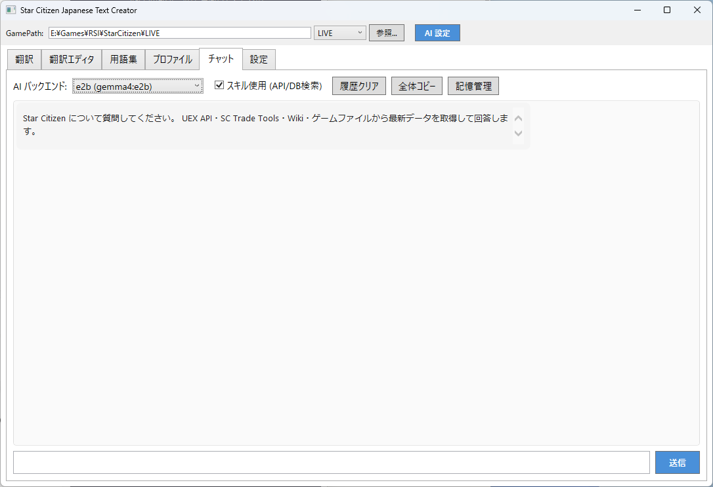
- AI バックエンド: で、どの AI に答えさせるかを選びます（AI 設定で登録したもの）。
- スキル使用 (API/DB検索)（既定でオン）— AI が船・装備・ロケーション・交易価格などを自分で調べてから答えます。オフにすると AI の知識だけで答えます。
- 📡 外部AI相談: — チェックを入れた別の AI にも同じ質問を投げ、答えを突き合わせられます。
- 履歴クリア で会話をリセット、全体コピー で会話をまとめてクリップボードへ。
- 記憶管理 は ナレッジの画面を開きます。
ヒント: ロケーション検索（ステーションや都市の精錬所・ハンガー・エレベーターの場所など）は専用タブではなく、このチャットのスキルとして動きます。「Area18 の精錬所はどこ？」のように普通に聞いてください。
22Web チャット — ブラウザ・スマホから使う
PC 上のアプリが Web サーバーになり、同じ Wi-Fi のスマホのブラウザからチャットできます。ゲームを全画面で遊びながら、手元のスマホで質問する、という使い方ができます。
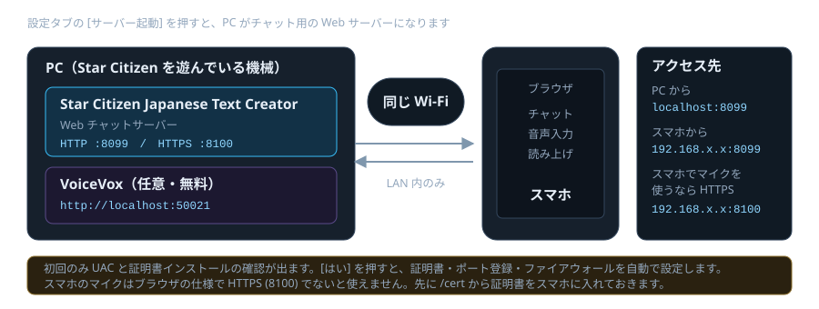
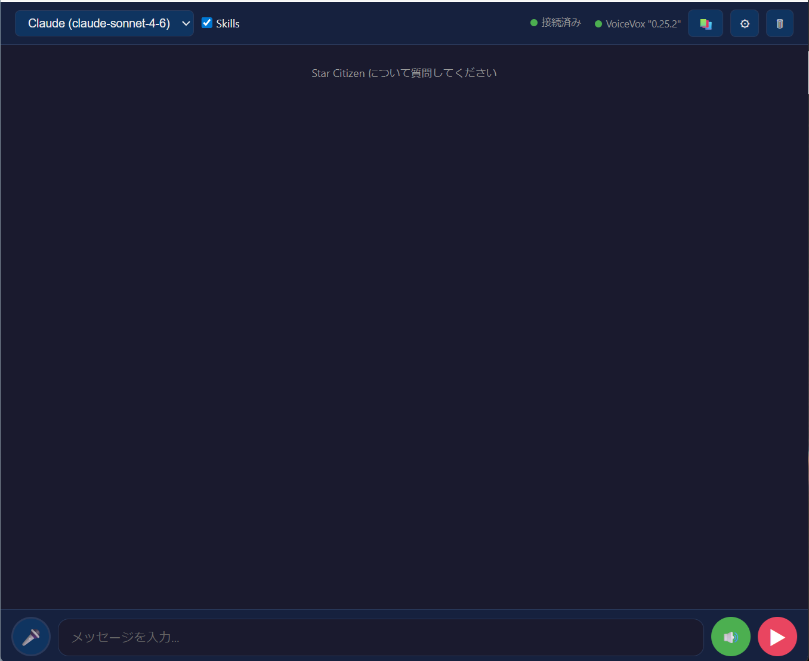
起動する
- 設定 タブで HTTP ポート:（既定
8099）と HTTPS:（既定8100）を確認します。 - サーバー起動 を押します。HTTP と HTTPS が同時に立ち上がります。
- 初回のみ UAC プロンプトが出ます。はい を押すと、証明書のインストール・HTTPS ポートの登録・ファイアウォールの開放を自動で行います。続けて 証明書インストール確認が 3 回出るので、すべて はい を押します。
- ブラウザで次の URL を開きます。
- PC から:
http://localhost:8099/ - スマホなど LAN 内の機械から:
http://192.168.x.x:8099/ - スマホでマイクを使う場合:
https://192.168.x.x:8100/
- PC から:
192.168.x.x の調べ方: PC でコマンドプロンプトか PowerShell を開いて ipconfig を実行します。「Wi-Fi」または「イーサネット」の IPv4 アドレス（例 192.168.1.15）がこの PC のアドレスです。アプリの画面にも表示されます。スマホは同じ Wi-Fi につないでください。
スマホでマイクを使う
ブラウザは localhost 以外の HTTP ではマイクを許可しません。音声入力を使うときだけ、次の手順で HTTPS 側 (8100) を使えるようにします。マイクを使わないなら http://192.168.x.x:8099/ のままで構いません。
- スマホのブラウザで
http://192.168.x.x:8099/certを開きます。 - ［証明書をダウンロード］をタップしてインストールします。
- iPhone: 設定 → 一般 → VPN とデバイス管理 → プロファイルをインストール → 設定 → 一般 → 情報 → 証明書信頼設定 → 有効化
- Android: 設定 → セキュリティ → 証明書のインストール → CA 証明書 → ダウンロードしたファイルを選択
https://192.168.x.x:8100/を開きます。マイクが使えるようになります。
「この接続ではプライバシーが保護されません」と出たとき。自己署名証明書を使っているためで、異常ではありません。詳細設定（iPhone Safari なら 詳細を表示）から続行してください。一度許可すれば、同じブラウザでは次から出ません。通信自体は暗号化されています。
証明書はこの PC 専用の自己署名証明書で、外部の認証局は使いません。不要になったらスマホから削除してください。ファイアウォールには「SC Japanese Assistant HTTP」「SC Japanese Assistant HTTPS」というルール名で登録されます。
音声で読み上げさせる
- PC で VoiceVox を起動しておきます（無料）。既定の接続先は
http://localhost:50021です。 - 画面下の入力バーにあるスピーカーボタンを押すと読み上げがオンになります。オフのときは 🔈、オンにすると緑色の 🔊 に変わります。押さないかぎり読み上げません。
- オンのときは、質問を送ると「おまちください」、回答が来ると「お待たせしました」と AI が作った要約を読み上げます。
- 画面右上の歯車アイコンから話者（キャラクター）を変えられます。アプリの設定タブの VoiceVox 話者ID でも指定できます。
- 読み上げの速さは、アプリの設定タブの VoiceVox 速度（0.5〜2.0 倍、既定 1.0 倍）で決めます。設定を保存 を押したあと、ブラウザでページを読み込み直すと反映されます。
データ API（読み取り専用）
Web チャットサーバーを起動していないと、データ API は使えません。設定タブの サーバー起動 を押してから呼んでください。アプリを起動したときに自動で起動させるには 自動起動 にチェックを入れます。
Web サーバーを起動している間は、詳細タブ・交易・契約などのデータを JSON か HTML で読み出せます。ほかのツールやスクリプトから使うためのもので、すべて GET の読み取り専用です（DB には書き込みません）。データは画面と同じ読み方で出します。
- ポート: Web チャットと同じです。
http://localhost:8099/api/…、HTTPS ならhttps://localhost:8100/api/…（LAN の他の機械からは192.168.x.x）。 - 形式:
format=json（既定）かformat=html。それ以外は 400 になります。- JSON の一覧は
{ "total": 全体の件数, "count": 返した件数, "items": [ … ] }です。totalはlimit・offsetを通す前の件数、countは返した件数です。 - JSON の詳細は
{ "record", "name", "text" }です。項目はアプリの中のデータの項目名のままです。 - HTML の一覧は表、詳細は詳細タブと同じ見た目のページです。詳細の中のリンクは
/api/detail?record=…&format=htmlに移ります。
- JSON の一覧は
- 件数: 一覧には
limit（最大件数。1 以上の整数）とoffset（飛ばす件数。0 以上の整数）を付けられます。付けなければ全件です。/api/searchのlimitだけは 1〜1000 です。 - 生の JSON: 契約の一覧の
RawJson（ゲームデータの生の JSON。とても大きい）は、既定では出しません。raw=1を付けたときだけ出します。 - エラーは形式にかかわらず
{ "error": "…" }で返します。引数の誤りは 400、個人のデータをこの PC 以外から読もうとしたときは 403、見つからないとき・/api/で始まる知らないパスは 404、GET 以外は 405、データがまだ無いときは 503、アプリの中の失敗は 500（"内部エラー"。中身はアプリのログapp_log.txtに残します）。
個人のデータはこの PC からだけ。パスが /api/my/ で始まるもの（所持船・所持品・Hangar・ゲームログなど）は、要求元がこの PC（ループバック）で、しかも Host ヘッダーのホスト名が localhost・127.0.0.1・[::1] のどれか（ポートは問わない）のときだけ返します。それ以外は 403 になります。個人のデータの応答には CORS のヘッダーを付けません。
ゲームのデータのルートに混ざる個人のデータも同じ条件です。/api/blueprints の所持（Owned）・在庫（StockText・stockText）・手持ち（haves）、/api/detail と /api/missions/detail の【ブループリント】の節の「在庫」「所持」の行と「手持ち」の欄は、上と同じ条件（この PC から、Host が localhost・127.0.0.1・[::1]）のときだけ画面と同じに出し、そのときの応答には CORS のヘッダーを付けません。条件に合わない要求（LAN の他の機械から・Host が違う）には、個人のデータを出さずに CORS のヘッダーを付けて返します。ほかのゲームのデータのルートは、いつも CORS のヘッダーを付けます。
| パス | 中身 | 応答の形 | 主な引数 |
|---|---|---|---|
/api | API の一覧 | 一覧（path・description・parameters・personal）と formats | |
/api/search | 詳細タブの検索（星系・場所・お店・資源・品目） | 一覧（total は見つかった候補の数） | q 名前、limit 品目の候補の最大件数（1〜1000。既定 40） |
/api/detail | 詳細タブの詳細（品目・資源・お店・場所・星系） | 詳細 | record（必須） |
/api/ships /api/ship-weapons /api/ship-gear | 詳細タブの分類「船舶」「船舶武器」「船舶装備」 | 一覧 | kind 種類、size サイズ（3 か S3）、name 名前の一部 |
/api/personal-weapons /api/personal-gear /api/ores | 詳細タブの分類「個人武器」「個人装備」「鉱石」 | 一覧 | kind、name |
/api/shops /api/stations /api/systems | 詳細タブの分類「お店」「ステーション」「星系」 | 一覧 | kind、name |
/api/trade/commodities /api/trade/terminals | 交易のコモディティ・端末 | 一覧 | |
/api/trade/prices | 端末で買える物・売れる物 | { "terminal", "buy": 一覧, "sell": 一覧 }（limit・offset はそれぞれに） | terminal 端末名（必須） |
/api/trade/routes | 交易ルートの検索 | 一覧（CommodityDisplayName は画面と同じ「日本語 (英語)」） | budget 予算（画面と同じ書き方: 1000000・1M・500k・3.5m）・scu 積載量（必須）、buySystem sellSystem（既定 全て）、excludeOutposts loadingDockOnly excludeLowStock（true/false）、commodities（カンマ区切り）、top（既定 20） |
/api/missions/categories | 契約の分類 | 一覧 | |
/api/missions | 契約の一覧 | 一覧（RawJson は raw=1 のときだけ） | category か q のどちらか一方（q が空なら全部）、raw |
/api/missions/detail | 契約の詳細と納品物（Wikelo の契約） | 詳細と deliverables（item・sources 入手場所の文） | record（必須） |
/api/blueprints | ブループリント | record 無し: 一覧（BP タブの表の行）。record 付き: { "record", "total", "count", "items": [{ "item", "stockText", "haves" }], "text" }（text は詳細タブの【ブループリント】の節）。品目が無ければ 404 | record できる品の record 名（省略可） |
/api/starmap | 星図の星系・場所 | 一覧 | |
/api/my/ships | 所持船 | 一覧 | |
/api/my/components /api/my/gear | 所持コンポーネント・所持している個人装備 | 一覧（同じ品の行は画面と同じく 1 行にまとめた形） | |
/api/my/blueprints | 所持している BP | 一覧（Uuid と BP の名前 Name） | |
/api/my/hangar/pledges /api/my/hangar/ships /api/my/hangar/ccus | Hangar の pledge・保有船・CCU | 一覧 | |
/api/my/loadout | 保有船の今の装備と付け替えの候補（装備タブの表と同じ） | 一覧（行に Candidates 候補・SelectedChoice 今の選択）と ship・name・record | ship 保有船の InstanceKey（/api/my/hangar/ships の値）か my|所持船の Id（必須） |
/api/my/gamelog | ゲームログの残してある行 | 一覧と broken（読めなかった行の数） | |
/api/my/mining /api/my/ore-stock /api/my/commodity-trades | 採掘の記録・鉱石の在庫・商品売買の記録 | 一覧 |
例:
http://localhost:8099/api/search?q=Arrow
http://localhost:8099/api/detail?record=EntityClassDefinition.xxx&format=html
http://localhost:8099/api/ship-weapons?size=S3&limit=20
http://localhost:8099/api/trade/routes?budget=1M&scu=96&buySystem=Stanton
http://localhost:8099/api/missions?q=&limit=10&raw=1
http://localhost:8099/api/my/hangar/shipsヒント: 交易の API は、交易タブで価格を読み込んだあとに使えます（まだなら 503）。種類（kind）の値は詳細タブの「種類」の欄と同じ文字です（個人装備のアーマー・服は「アーマー (ヘルメット)」のように部位まで）。kind・name・size などの絞り込みは前後の空白を除き、空なら絞り込みません。
23ナレッジ（記憶）— AI に覚えさせる
AI が知らないこと（最新のバグ、コミュニティ用語、自分だけの Tips）を教えて覚えさせる機能です。覚えた内容はチャットの回答に反映されます。チャットタブの 記憶管理 から開きます。
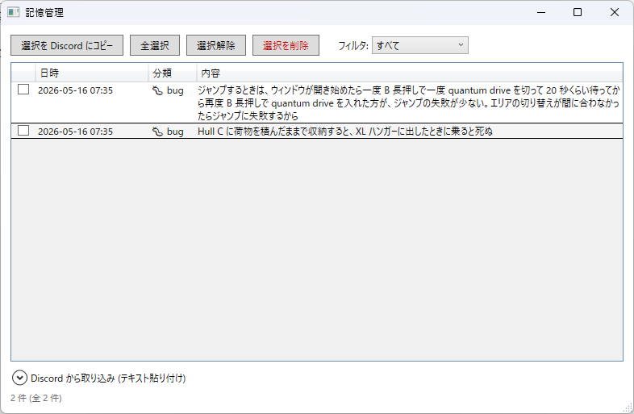
- 保存 — チャットで「〜を覚えて」と伝えるか、この画面から直接登録します。
- カテゴリ — バグ / 用語 / Tips / 一般 で分類でき、フィルタで絞り込めます。
- 削除 — 全選択 選択解除 選択を削除 でまとめて整理できます。
バグ情報を覚えさせておくと便利です。例:「エレベーターに乗ると落ちることがあるので、乗る前に一度しゃがむと回避しやすい」。
Discord とのやりとり
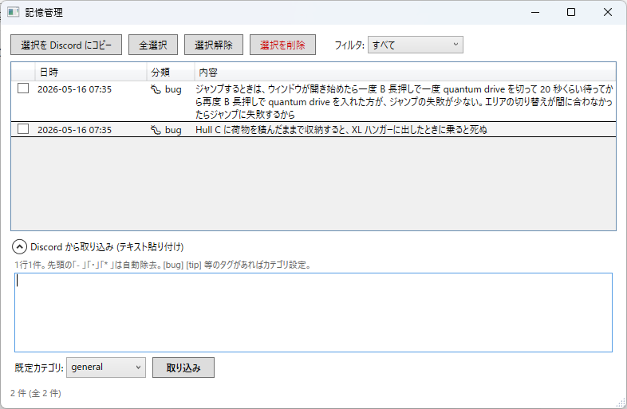
- 選択を Discord にコピー — 選んだ記憶を、カテゴリ別にまとめた Discord 用のマークダウンとしてクリップボードにコピーします。そのまま貼り付けて共有できます。
- Discord から取り込み（画面下部を展開）— Discord やテキストファイルからコピーした内容を貼り付けて 取り込み を押すと一括登録できます。行頭の
-や[bug]のようなタグは自動で認識されます。
24設定タブ
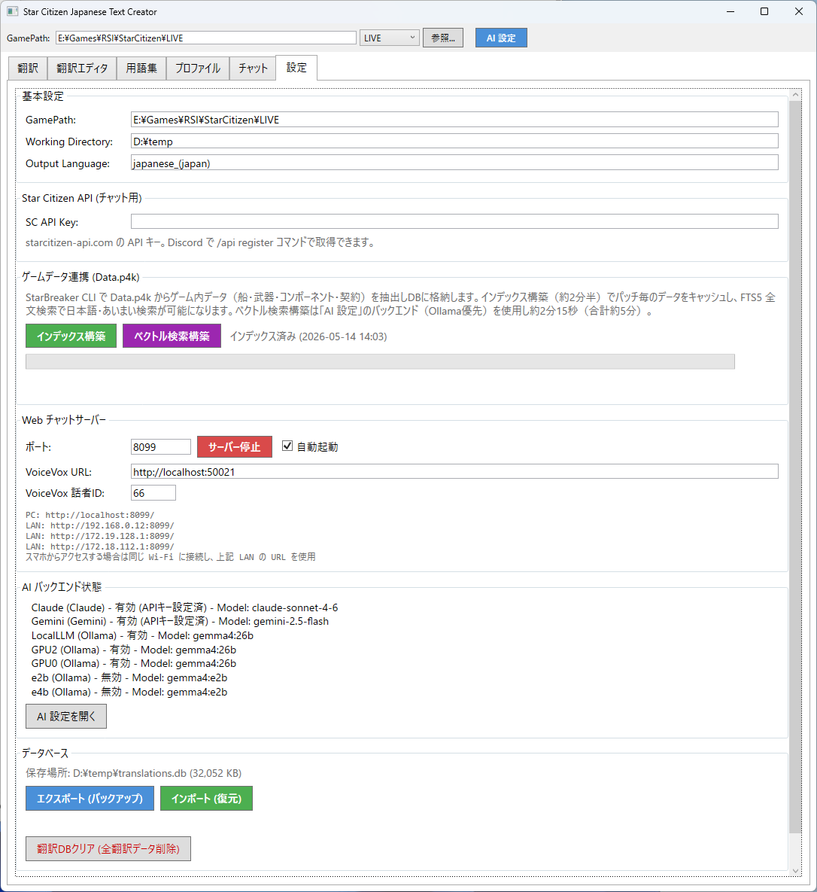
| グループ | 内容 |
|---|---|
| 基本設定 | GamePath、Working Directory（データの保存先）、Output Language（書き出す言語フォルダ名。既定 japanese_(japan)） |
| Star Citizen API (チャット用) | チャットのスキルが使う SC API Key |
| UEX 価格送信 (Screen Capture) | 価格キャプチャで使う UEX API Key |
| ゲームデータ連携 (Data.p4k) | インデックス構築（Data.p4k から船・武器・コンポーネント情報を取り込む）／ベクトル検索構築／Wiki 契約取得 |
| Web チャットサーバー | HTTP / HTTPS ポート、VoiceVox の URL と話者 ID、VoiceVox 速度（0.5〜2.0 倍、0.1 刻み、既定 1.0 倍。Web チャットとゲームログの読み上げの両方で使います）、サーバー起動、自動起動 |
| ゲームログの音 | Game.log の追い読みで、操縦中、または船に乗っているとき（他人の船への同乗も含む）に休戦ゾーンに入ったとき・着陸場に到着したときに音を鳴らします（歩いて休戦ゾーンに入ったとき、ジャンプポイントの休憩所では鳴らしません）。VOICEVOX で読み上げる をチェックすると、場面ごと（休戦ゾーン進入・到着・乗船・下船・操縦席を離れた・操縦・ハンガーリクエスト完了・ハンガーに入った・ハンガーを出た・量子ジャンプの目的地を設定・量子ジャンプ離脱・契約完了・採掘など）に読む／読まない、読み上げる文（{場所} {船} {内容} {金額} を置き換え）、声（一覧を取得 で VOICEVOX の話者から選ぶ）を決められます（場面の説明は表の下）。VOICEVOX の URL と速度は Web チャットサーバーの VoiceVox URL・VoiceVox 速度を使います。つながらないときは休戦ゾーンと到着だけ音のファイルを鳴らします。倒した相手はゲームのログに出ないので読み上げられません。読み上げる先 で、読み上げる文を外のアプリ（exe・API）に渡すこともできます（外のアプリに渡す） |
| AI バックエンド状態 | AI 設定を開く |
| 表示設定 | 契約詳細フォントサイズ（既定 14pt） |
| 3D モデル | 船の 3D 表示（→ 詳細の「船の 3D 表示」）のモデルの置き場所。置き場所（既定は Windows の TEMP の中の StarCitizenJapaneseTextCreater\ship3d。参照… で選べます。完全なパスだけ保存します）、置き場所のドライブの容量（全体と残り）、最大容量 (MB)（初期値は残り容量の 1/3、ただし最大 2GB。残り容量より小さい値だけ保存します。超えたら、取り込みが終わるたびに古いものから消します。表示中・取り込み中・今取り込んだものは消しません）、今の使用量、まとめて取り込む（保有している船（所持船と Hangar 同期の船）を先に、その後に詳細の船の一覧の残りを取り込みます。始める前に隻数・予想時間・予想サイズを出して確かめ、予想サイズの合計が最大容量を超える手前で止めます。古いものを消して入れ替えません（予想より大きくて少し超えることはあります）。最新のモデルがある船は飛ばします。欄の値を変えて 設定を保存 を押さずに押したときは、先にその値を反映して保存します）と進み具合。アプリが書いた印のあるファイルだけを扱います |
| 自動更新 | 自動更新 の入切、毎日の時刻:（既定 08:00）、更新を確認。詳しくは下の「自動更新」 |
| データベース | エクスポート (バックアップ)／インポート (復元)／個人データを含める／翻訳DBクリア (全翻訳データ削除) |
変更したら最後に 設定を保存 を押してください。
ゲームログの読み上げの場面（一部）
| 場面 | 既定の文 | 読むとき |
|---|---|---|
| 量子ジャンプの目的地を設定（前の「量子ジャンプ開始」） | 量子ジャンプの目的地を設定しました。 | 量子ジャンプの行き先を選んだとき（Game.log には実際に跳んだときの行が無く、行き先を選んだ行で読みます）。到着する前に同じ行き先を 5 秒以内に選び直したときは、まとめて 1 回だけ読みます |
| 量子ジャンプ離脱 | 量子ジャンプから離脱します。 | 量子ジャンプで行き先に到着したとき |
| 操縦席を離れた | {船}から降りました。 | 操縦席を立ったとき（例「Cutlass Black から降りました」）。船が分からないときは「船から降りました。」と読みます。船から降りたときの 下船 とは別の場面です |
| 操縦 | {船}を操縦します。 | 操縦席を立ったあと（またはログの最初から）、自分の船の経路計算・量子ジャンプの燃料の問い合わせなど航法の行が最初に出たとき。ただし、直前に操縦席を立った同じ船については、航路データが取れなかったという行（<Failed to get starmap route data!>）では読みません。今乗っている船（最後に乗船・同乗した船）が分かっているときは、航法の行に出てくる船のうちその船を優先して「操縦」にします |
| 格納 | {船}を格納しました。 | ハンガーエレベーターの端末で自分の船の一覧を開いたあと（35 秒以内）に、船の昇降台が下がったとき。下がる前後 3 秒以内に船の呼び出しがあれば、呼び出しの昇降台として読みません。格納した船から直後（60 秒以内）に出たことは 下船 として出しません |
| 到着 | {場所}に到着しました。ハンガーリクエスト可能です。 | 着陸場に到着したとき。休憩所やステーションなど、今までの引き方で名前が引けなかった場所も、ゲームの星図データの名前で読みます（星図の名前はインデックス構築で取り込みます。無いときは起動後に裏で一度取り出します） |
| ハンガーリクエスト完了 | ハンガーが許可されました。 | ゲームに「ハンガーリクエスト完了」の通知が出たとき。離陸前と着陸時の両方で出ます |
| ハンガーに入った / ハンガーを出た | ハンガーに入りました。／ハンガーを出ました。 | ゲームログの ハンガー進入 / ハンガー退出 の行（25）が出たとき。初めは読まない設定です。文に {場所} を使えます（到着と同じ場所の名前） |
- Game.log に行き先を選んだ行や到着の行が出ない量子ジャンプもあり、そのときは量子ジャンプの目的地を設定・量子ジャンプ離脱を読みません。
- 量子ジャンプ離脱・量子ジャンプの目的地を設定・操縦席を離れたは既定の文を変えました。保存してある文が前の既定の文（量子ジャンプ離脱と量子ジャンプの目的地を設定は「量子ジャンプします。」、操縦席を離れたは「操縦席を離れました。」）のままなら、新しい既定の文で読みます。
- 読み上げでは、
{船}の船の名前から会社名を省きます（例「Drake Cutlass Black」→「Cutlass Black」）。表の内容の欄の船の名前は変えません。 - 読み上げの記録が ログ タブに出ます。読んだ文は「[読み上げ] 場面: 文」、読まなかった行は「[読み上げ] 読まない（場面）: 理由」（場面を読まない設定・時刻が古い・直前の同じ場面から 10 秒以内・VOICEVOX で読み上げられなかった など）です。
- 場面の表の各行の 試聴 は、保存前の文と VoiceVox 速度 の値で読みます。実際の読み上げの速度は 設定を保存 で反映されます。
読み上げる文を外のアプリに渡す
「ゲームログの音」の 読み上げる先 で、読み上げる文を外のアプリ（exe か API）に渡せます。VOICEVOX で読み上げる が入っているときに使います。
| 項目 | 内容 |
|---|---|
| 読み上げる先 | VOICEVOX だけ（既定。今までどおり）／外のアプリだけ（VOICEVOX も音のファイルも鳴らしません）／両方（外のアプリを呼んでから VOICEVOX で読み上げます。外のアプリが失敗しても VOICEVOX で読み上げます） |
| 外のアプリの呼び方 | exe か API |
| exe のパス / exe の引数 | 呼ぶ exe と、引数のひな形（例 /say "{talk}"）。起動したら終わるのを待ちません |
| API の URL / API の方法 / POST の本文 | URL のひな形（例 http://localhost:50080/talk?text={talk}）、GET か POST、POST の本文のひな形（例 {"text":"{talk}","scene":"{scene}"}）。5 秒まで応答を待ち、2xx 以外は失敗とします。応答の本文は使いません |
| 試す | 今の入力（保存前）で外のアプリを 1 回呼び、結果をメッセージで出します（{talk} = 読み上げのテストです、{scene} = テスト、{speaker} = 既定の声の話者 ID）。呼んでいるあいだと結果のメッセージを閉じるまでは押せません |
- 置き換える値:
{talk}= 読み上げる文、{scene}= 場面（表の場面の欄の名前）、{speaker}= その場面の声の VOICEVOX の話者 ID。 - 置き換えの規則: exe の引数では、値の中の
"を\"にし、"の直前の\も Windows の引数の規則で崩れないように打ち消します（{talk}{scene}のように欄を続けて書いても、置き換えた後の並びで判断します。値に空白があるときは"{talk}"のように"で囲んでください）。URL では値を URL 用に打ち消します（Uri.EscapeDataString。例「到着しました」→%E5%88%B0%E7%9D%80%E3%81%97%E3%81%BE%E3%81%97%E3%81%9F）。POST の本文では値を JSON の文字列の中身として打ち消します（引用符は付かないので"{talk}"のように囲んでください。Content-Type はapplication/json; charset=utf-8）。 - 呼ぶ時期: 読み上げの順番が来たとき（順番待ちから取り出したとき）、VOICEVOX で鳴らす前に呼びます。順番待ちの数（3 件）と古いものを捨てる決まりは VOICEVOX と同じです。
- 失敗は ログ タブに出ます（「[読み上げ] 外のアプリを呼べませんでした（場面）: 理由」。「外のアプリだけ」では「[読み上げ] 読まない（場面）: 外のアプリを呼べませんでした: 理由」）。呼べたときは何も出しません。exe のパスか URL が空のときは呼ばずに「[読み上げ] 外のアプリの設定が空です」を出します（続けて同じなら出しません）。読み上げる文が空のときも呼びません（「外のアプリだけ」では「[読み上げ] 読まない（場面）: 読み上げる文が空です」を出します）。
- 「外のアプリを呼べませんでした」の行は失敗のたびに出します。そのほかに「[ゲームログ] 外のアプリを呼べませんでした: 理由」を、直前と理由が違うときだけ出します（呼べたら、次の失敗でまた出します）。
インポート (復元) の前に。バックアップを取り込むと、ファイル選択のあと「インポート選択」ダイアログが出て、何を復元するかを選べます。個人データを含める のチェックを外してエクスポートすると、個人データの DB（trade_cache.db。所持船・pledge・CCU・マーク・所持コンポーネント・所持個人装備・所持 BP・装備の割り当て・鉱石の在庫や売買の記録・ゲームログの記録など）を丸ごと入れないバックアップになります。人に配るときはこちらを使ってください。
翻訳DBクリア (全翻訳データ削除) は、手で直した訳もすべて消します。実行前に エクスポート (バックアップ) を取っておくことを強くおすすめします。
自動更新
新しい版が出ていないかを確かめ、変わったファイルだけを取って入れ替えます。
- 確かめるのは、起動したとき（画面が出て 20 秒後）と、毎日の時刻（既定
08:00。この時刻を過ぎたら、その日に 1 回）です。どちらも 自動更新 にチェックが入っているときだけです。 - 設定タブの 自動更新 の欄で、自動更新 の入切と 毎日の時刻:（
HH:mm）を決めます。設定を保存 で有効になります。 - 更新を確認 は、自動更新が切でも、今すぐ確かめます。
知らせの窓
新しい版があると、ダウンロードの前に「アップデートがあります」の窓で聞きます。窓は最前面に出ますが、フォーカスは奪いません。遊んでいる最中でも気づけるように、画面の右下に出します（全画面の排他モードのゲームの上には出ません）。窓には次のものを出します。
- 新しい版（「新しい版 v◯ があります。ダウンロードしますか？」）
- 今の版（「今の版: v◯」）
- ダウンロードの大きさ（「ダウンロードの大きさ: ◯ MB（変わったファイル ◯ 個）」）
- 更新内容（間の版の分も含めて全部。スクロールして読めます）
| ボタン | すること |
|---|---|
| 終了して更新 | 窓の中でダウンロードの進み具合を出し、取り終えたらアプリを閉じて入れ替え、起動し直します |
| 次回更新時に知らせる | 何もしません。次に確かめるとき（起動したとき・毎日の時刻）にまた知らせます。窓を × で閉じたときも同じです |
| 今は更新しない | この版は見送ります。自動の確かめでは、この版ではもう知らせません（もっと新しい版が出たら知らせます） |
| 後で手動で更新する | 自動更新を切にします。以後は 更新を確認 で更新します（自動更新は設定タブで入れ直せます） |
更新を確認 から開いたときは、ボタンは 終了して更新 と 中止 だけです。
取るもの・触らないもの
- 取るのは、前の版から変わったファイルだけです。同梱の大きな DB は、前の版からの差分を順に当てます。差分が合わないときは、その DB を丸ごと取ります。
- 作業フォルダの DB と個人データには触りません。
- 作業フォルダがインストール先と同じときは、データベースは入れ替えません。知らせの窓に「作業フォルダがインストール先と同じなので、データベースは入れ替えません」と出ます。
手で入れるとき
インストール先に書き込めないとき（Program Files など）や、新しい版に新しい .NET が要るときなどは、入れ替えずに「新しい版があります」の窓で知らせます。リリースのページを開く で開いたページから、手で入れてください。
入れ替えの途中で止まったとき
- 入れ替えの途中でパソコンが止まったり、強制終了したりしても、次にアプリを起動したときに、入れ替えを最後まで済ませるか、元に戻します。本体のファイルを入れ替えている途中で止まったときは、次に Windows にサインインしたときに自動で続けます。
- サインインのときに続けた場合は、アプリは開きません。結果は、次にアプリを起動したときに知らせます。
- そのため、本体のファイルを入れ替える間だけ、Windows のサインインのときに 1 回だけ動く登録（HKCU の RunOnce）に
SCJPTextCreatorResumeUpdateを書きます。入れ替えが済んだら（うまくいったときも、元に戻したときも）すぐに消します。
入れ替えている間に起動したとき
入れ替えている間にアプリを起動すると、「更新を入れています」の小さな窓に「更新を入れています… 終わったら起動します。」と出て、入れ替えが終わってから起動します。10 分待っても終わらないときは「更新を入れるのに時間がかかっています。少し待ってから、もう一度起動してください。」と出ます。
失敗したとき
- 入れ替えに失敗したときは、元のファイルに戻して、元の版で起動し直します。入れ替えの記録は
%LOCALAPPDATA%\StarCitizenJapaneseTextCreater\update\update_log.txtです。 - 確かめるときの失敗（ネットワークなど）では窓を出しません。ログ タブと、設定タブの 自動更新 の欄の状態に出します。
- 終了して更新 のあとのダウンロードに失敗したときは、開いている窓に「ダウンロードに失敗しました: （理由）」「アプリはこのまま使えます。」と出し、ボタンを選び直せます。
25ゲームログ — 遊んだ記録を一覧にする
ゲームのフォルダの Game.log（今のログ）と logbackups の過去のログを読み、到着・乗船・量子ジャンプ・契約・売買・採掘・死亡といった局面を1 つの表に新しい順で出します。今のログは 1 秒ごとに増えた分を読み足します。読み込みはアプリの起動時に始まり、タブを開いていなくても続きます（音・読み上げのため）。
- 表の上の 1 行に状態が出ます（
Game.log: n 件 (1 秒ごとに読み足します)、過去のログ: 読み込み中 n / m ファイルなど）。Game.log が無いときは「Game.log が見つかりません」と出ます。設定タブの GamePath を確認してください。 - ゲームを起動し直して Game.log が最初から書き直されると、それまでの「現在」の行を捨て、
logbackupsに移された前回のログを過去のログとして読み足します。 - 列は 日時 / 種類 / 内容 / 金額 / ログ / 所持 です。ログ はどのファイルの行かで、今の Game.log の行は 現在 と出ます。
- 表の上の検索欄で、どれかの列にその文字を含む行だけに絞れます。見出しの Select で値ごとの絞り込み、見出しのクリックで並べ替え（Shift を押しながらで 2 つ目以降の並べ替えを足す）ができます。
出る行の種類
| 種類（表の文字） | 出るとき・内容 |
|---|---|
| 到着 / 出発 | 着陸場（ステーション・都市など）に入った／出た。内容は場所の名前と、直前に操縦していた船（/ 船: …）。同じ場所を出てすぐ戻ったときは、出発・到着とも出しません |
| ログイン | ゲームに入った直後の場所 |
| 区域 | 休戦ゾーンへの進入・突破、管轄区域への進入、私有地・制限区域などの通知（通知の見出しそのもの） |
| 乗船 / 同乗 / 下船 | 自分の船に乗った／ほかの人の船に乗った（所有者を添える）／船から降りた |
| 操縦 | 操縦席に座って、自分の船の航法の行が最初に出たとき |
| 降りた | 操縦席を立った（読み上げの場面の名前は「操縦席を離れた」）。船から降りた 下船 とは別です |
| 呼び出し / 呼び出し完了 | ハンガーエレベーターで船を呼び出した／呼び出しが終わった。船の名前がまだ分からないうちは仮の表示で出し、分かったら書き換えます |
| 格納 | ハンガーエレベーターで自分の船を格納した |
| ハンガー要求 | ゲームに「ハンガーリクエスト完了」の通知が出た（離陸前と着陸時の両方）。読み上げの場面の名前は「ハンガーリクエスト完了」 |
| ハンガー進入 / ハンガー退出 | ハンガーに入った／ハンガーから出た。内容は着陸場所の名前。船に乗っているときは、ハンガーリクエスト完了の後に「…管轄区域に進入」の通知が出たとき（「無統治区域管轄区域に進入」なら進入、ほかの管轄なら退出）。歩いているときは、「無統治区域管轄区域に進入」の通知（進入）か、ハンガーにいる間のほかの管轄の通知（退出）の後 10 秒、場所が変わらなかったとき。読み上げの場面の名前は「ハンガーに入った」「ハンガーを出た」 |
| 量子ジャンプ開始 / 量子ジャンプ | 量子ジャンプの行き先を選んだ／行き先に到着した（量子ジャンプから離脱した）。内容は 船 → 行き先。到着の行には、経路計算の燃料の見積りがあれば添えます |
| 燃料低下 | 燃料低下の通知。続けて出る通知は最初の 1 件だけにします |
| 衝突 | 船の衝突。内容は 船 → 相手: … / 場所: … |
| 契約受注 / 契約完了 / 契約失敗 / 契約放棄 / 契約終了 | 契約を受けた／終わった。内容は契約の名前（分からないうちは ID の先頭で出し、分かったら書き換えます） |
| 目標達成 / 目標失敗 / 目標撤回 | 契約の目標の通知 |
| 納品 | 品を届ける目標を達成した |
| 購入 / 購入失敗 | 店で品・船を買った（失敗したら購入失敗に書き換え） |
| 商品購入 / 商品売却 / 取引失敗 | 取引端末での商品の売買。成功した売却の行には、鉱石 タブの売買の記録で計算した利益を / 利益 +n aUEC (n%) のように添えます |
| 貨物エレベーター | 貨物エレベーターで品を呼び出した・降ろした・要求が断られた |
| 採掘 | 手で掘った鉱物を拾った、GEO から回収した |
| 移動 | 採掘した品を SCU コンテナから・コンテナへ移した |
| BP受信 | 「設計図を受信しました」の通知。直前に完了した契約が分かれば、その名前を添えます |
| 死亡 / 復活 | 死亡した（船に乗っていれば船の名前、直前に同じ船の衝突があれば「（衝突）」を添える）／生き返った場所 |
| 保険請求 / 保険請求失敗 | 船の保険請求 |
所持・在庫への反映 — 「所持」の列
購入・採掘・貨物エレベーターで降ろした品・呼び出した船・納品の行には、所持 の列にボタンが出ます。
| ボタン | 押すと |
|---|---|
| 入れる | 行の品を所持コンポーネント・所持個人装備・鉱石 の在庫に入れます（船は所持船へ） |
| 減らす | 納品の行。届けた品を在庫から引きます |
| 取り消す | 入れた（引いた）分を元に戻します。0 より下には下げません |
- 2026/10/15 23:01（日本時間）より前の行には、船の行を除いてボタンが出ません。
- 次のものはボタンを押さなくても自動で入ります（行ごとに 1 回だけ）。
- 売買・採掘の記録 → 鉱石 タブの記録
- 納品の行 → 在庫から引く（上の日時以降の行）
- 購入した船・呼び出した船 → 所持船（上の日時以降の行。呼び出した船は、すでに持っている船なら入れません）
- BP受信の行 → BP タブの所持（期限なし。BP タブで外しても、ログの読み直しで再び入れることはしません）
そのほかの操作
- 内容の欄をダブルクリックすると、押した位置の品名の品を 詳細 タブに出します（品が 1 つの行はどこを押しても）。品名の無い行は行の船を、BP受信の行はその BP でできる品を出します。
- 確定した行は
trade_cache.dbに残します。バックアップや PC 間の同期で渡ってきたほかの PC の行も、手元の行と合わせて表に出します（状態の行に「trade_cache.db に残した行 (ほかの PC の行): n 件を合わせて表示」と出ます）。
音と読み上げ
- 休戦ゾーン進入と到着のときに音を鳴らせます。休戦ゾーン進入の音は、操縦中、または船に乗っているとき（他人の船への同乗も含む）だけ鳴らします（歩いて入ったときは鳴らしません）。
- VOICEVOX で場面ごと（到着・乗船・下船・操縦・操縦席を離れた・格納・ハンガーリクエスト完了・ハンガーに入った・ハンガーを出た・量子ジャンプの目的地を設定・量子ジャンプ離脱・契約完了・採掘・BP受信・死亡・復活・衝突など）に読み上げられます。設定は 24 設定タブ の ゲームログの音 と「ゲームログの読み上げの場面」の表を見てください。読み上げるのは、ゲームを遊んでいる間に新しく足された行だけです。
- ハンガーに入った・ハンガーを出たの読み上げは、初めは読まない設定です。読み上げでは船の名前から会社名を省きます（例 Cutlass Black）。読んだ文と、読まなかった行の理由は ログ タブに出ます。
26鉱石 — 資源の在庫と売買・採掘の記録
採掘した鉱石や積み荷の資源の在庫と、商品の売買の記録・採掘の記録を見るタブです。上に在庫、下の左に売買の記録、右に採掘の記録が並びます。中身は trade_cache.db に入り、資源の名前とグループは gamedata_cache.db と翻訳データベースから引きます。初めて表示したときに読み込みます。
在庫 (資源 × 品質)
| 列 | 内容 |
|---|---|
| 資源 | 資源の名前（日本語 (英語)） |
| グループ | 資源のグループ |
| 品質 | 0〜1000 の整数。空欄は不明。書き換えられます |
| 量 | 持っている量。書き換えられます。0 にすると行を削除するか確かめます |
| 単位 | SCU（積み荷）または 個（手で掘った鉱石） |
| メモ | 書き換えられます |
| 更新日時 | 最後に変わった日時 |
- 在庫は資源・品質・単位の組ごとに 1 行です。品質を書き換えて別の行と同じ組になると、量を足して 1 行にまとめます。
- 手で足す — 表の下の グループ: で絞り、検索:（日本語名 / 英語名 / レコード名の一部）で 資源: の候補を絞って選び、品質:（空欄は不明）、量:、単位:（SCU / 個）、メモ: を入れて 追加 を押します。同じ組の行があれば、その行の量に足します。
- 選択を削除 — 選んだ行を消します（確認が出ます）。
- 利益を再計算 — 売買の記録の利益を計算し直し、まだ在庫に入れていない記録を在庫へ入れます。状態の欄に「利益を計算した売却 n 件、在庫へ反映: 売買 n 件・採掘 n 件」と出ます。在庫が足りず 0 で止めた分があれば、後ろに「 (在庫が足りず 0 で止めた量 n)」が付きます。
- 在庫の表のセルも Ctrl+C で文字をコピーできます。
売買の記録・採掘の記録
どちらも読むだけの表です。検索・Select・並べ替え・コピーは表の共通の操作のとおりです。時刻はこの PC の時刻で出します。
| 表 | 列 |
|---|---|
| 売買の記録 | 時刻 / 種類（購入 / 売却）/ 資源 / 量 SCU / 合計 aUEC / 単価 / 店 / 結果（成功なら 成功、失敗はゲームの結果の文字）/ 仕入れ / 利益 / 利益率 |
| 採掘の記録 | 時刻 / 資源 / 量 / 単位 / 品質 / 方法（手掘り / 船 / GEO / 手入力） |
Select が出ないのは、売買の記録の 時刻 / 量 SCU / 合計 aUEC / 単価 / 仕入れ / 利益 / 利益率 と、採掘の記録の 時刻 / 量 です（採掘の記録の 品質 には出ます）。
利益の計算
- 同じ資源の成功した買いを時刻の順に、先に買った分から売りに当てます（先入れ先出し）。
- 仕入れ は当てた買いの単価 × SCU の合計、利益 は売りの合計 − 仕入れ、利益率 は利益 ÷ 仕入れです（当てた買いが無い・仕入れが 0 なら利益率は空欄）。
- 売りより後の買いは当てません。買いが足りない分は仕入れ 0 として数えます。失敗した行は計算に入れません。
ゲームログ・BP との関係
- 売買と採掘の記録は ゲームログ の行から自動で入ります（→ 25）。新しい記録が入ると、利益を計算し直して在庫へ入れます。
- 在庫を変えるのは 2026/10/15 23:01（日本時間）以降の記録だけです。それより前の記録は表に残しますが、在庫は動かしません。
- 在庫への入れ方: 売買は成功した行の買いで足し、売りで引きます（品質は不明、単位は SCU）。失敗した行・SCU の無い行・資源の分からない行は在庫を変えません。採掘は行の量・単位・品質で足します。資源が分からない採掘の行も在庫に入れません。在庫は 0 より下には下げません。
- ゲームログ の成功した売却の行に出る利益（
/ 利益 +n aUEC (n%)）は、ここの売買の記録で計算したものです。 - BP タブの 在庫 の欄は、ここの在庫と照らした結果です（→ 27）。
- 在庫・売買の記録・採掘の記録の 資源 の列をダブルクリックすると、その資源を 詳細 タブに出します（採掘できる場所の表。→ 鉱石（資源）の詳細）。資源の分からない行では何もしません。ほかの列のダブルクリックの動きは今までどおりです。
27BP — ブループリントを調べる
ゲームのブループリント（BP）を一覧にし、できる品・材料・時間・入手のしかたと、鉱石 タブの在庫で作れるかを確かめるタブです。BP のデータは設定タブの インデックス構築、または起動後に裏で行う取り出しで入ります。まだ無いときは表の上に「インデックスが未構築です」「BP がまだありません」などと出ます。
| 列 | 内容 |
|---|---|
| できる品 | 作れる品の名前（日本語 (英語)）。ダブルクリックで 詳細 タブにその品を出します（採掘レーザーや鉱石ポッドなども開けます） |
| 分類 | BP の分類 |
| 材料 | 枠ごとに 資源名 数量 単位（品質の下限があれば 品質 n 以上）を / でつなぎます。いくつかの枠から選ぶ BP は先頭に n 枠選択: を付けます。マウスを乗せると枠の名前が出ます。ダブルクリックで、その BP の材料を全部 詳細 タブのリストに並べ、押した材料の詳細を出します（→ 鉱石（資源）の詳細） |
| 時間 | 作るのにかかる時間 |
| 入手 | 初期（最初から持っている）／契約 n 件（契約の報酬）／不明。マウスを乗せると契約の名前が出ます。ダブルクリックでその契約を 契約 タブで開きます（2 つ以上あれば名前のメニューから選びます） |
| 在庫 | 鉱石 タブの在庫と照らした結果。足りる（全部の枠を満たす。選ぶ BP は選ぶ数だけ）／一部／不足。品質の下限より低い在庫は数えません。原石は精錬後の資源として 1 SCU = 1 SCU で数えます |
| 所持 | 所持 / 未所持 のボタン。押すと切り替わります。ゲームログ の BP受信の行からは自動で「所持」になります |
絞り込む
- 資源: — チェックの付いた一覧から資源を選びます（いくつでも）。選んだ資源を全部材料に使う BP だけを出します。原石は
原石名 → 精錬後名で、精錬後の資源で絞ります。(すべて) で選択を外します。 - 分類: — BP の分類で絞ります。
- 今の在庫で作れるものだけ — 在庫の欄が「足りる」の BP だけにします。
- 所持している BP だけ — 所持の欄が「所持」の BP だけにします。
- 表の上の検索欄と、見出しの Select・並べ替えは ゲームログの表と同じです。
BP の情報は、詳細 タブの品の詳細の 【ブループリント】 の節と、契約 タブの契約の詳細の ■ 報酬の BP の節にも出ます。
28データの保存先
アプリが作るファイルはすべて Working Directory の中にまとまっています。バックアップしたいときはこのフォルダごとコピーしてください。
装備の購入先 (UEX) は equipment_cache.db に入ります。このファイルもアプリに同梱されているので、初回から購入先が表示されます。
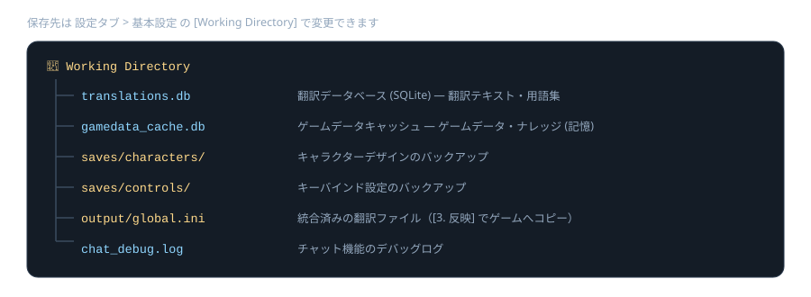
29困ったときは
ゲームが日本語にならない
次の順に確認してください。
- 上部の GamePath が、いま遊んでいるチャンネル（LIVE / PTU など）を指しているか。
- 翻訳 タブで 日本語化 → 実行 を行ったか。アプリを更新したあとは毎回必要です。
- ゲームフォルダに
data/Localization/japanese_(japan)/global.iniができているか。 - ゲームフォルダの
user.cfgにg_language = japanese_(japan)の行があるか。
パッチが来たら英語に戻った
ゲーム側のファイルがパッチで置き換わったためです。新しいパッチを読み取る → 日本語化 → 実行 を行ってください。これだけで日本語に戻ります。増えた英語を自分で訳したい場合にだけ、間に AI翻訳 を挟みます。
訳がおかしい / 訳さないでほしい語がある
翻訳エディタでその行を直接書き換えると manual になり、再翻訳では上書きされず、同梱 DB で作り直したときも引き継がれます。毎回同じ語を直しているなら、用語集に登録して 一括置換 (翻訳済みテキストに適用) を実行するほうが早いです。ただし一括置換だけは例外で、手で直した行も置き換えます。英語のままにしたい語は、翻訳エディタでその行を選んで 全て原文 を押してください。
スマホからつながらない
- PC とスマホが同じ Wi-Fi につながっているか確認します。
- 設定タブで サーバー起動 を押したか、初回の UAC プロンプトで はい を選んだか確認します。
- PC で
ipconfigを実行して IPv4 アドレスを確認し、そのアドレスでアクセスします。 - マイクを使うなら
https://と 8100 番であることを確認します。
スマホでマイクのボタンが反応しない
HTTP（8099）で開いている可能性が高いです。ブラウザはセキュアな接続でないとマイクを許可しません。スマホでマイクを使うの手順で http://192.168.x.x:8099/cert から証明書を入れたうえで、https://192.168.x.x:8100/ で開き直してください。証明書の警告は 詳細設定 から続行します。それでもだめな場合は、ブラウザのサイト設定でマイクがブロックされていないか確認します。
船の初期装備が表示されない / 古い
船舶管理 > アップグレード管理 の 装備データを再抽出 を実行してください。数分かかります。初回は実行しておくことをおすすめします。
とくに武器 (ガン) のデフォルトが空欄のままの場合は、再抽出が必要です。古いバージョンで作られたデータには、ジンバル越しに積まれている武器が入っていません。再抽出すると、ジンバルの下に実際の武器が出るようになります。
装備の購入先が「取得中…」のまま / 出てこない
購入先は起動のたびにバックグラウンドで UEX から取り込みます。回線にもよりますが全部そろうまで十数秒から 1 分ほどかかるので、少し待ってからもう一度マウスを乗せてください。ネットにつながっていないときは前回取り込んだ内容がそのまま出ます。船に最初から付いている装備は店で売られていないことが多く、その場合は待っても 購入先の登録がありません のままです。UEX の API キーは要りません。
My Hangar 同期でログインできない
内蔵ブラウザ内で RSI にログインしてから ログイン完了 → 再試行 を押してください。WebView2 ランタイム（Evergreen）が入っていない環境では内蔵ブラウザが表示されません。Windows 10 / 11 には通常入っていますが、入っていない場合は Microsoft から導入してください。
翻訳データを全部やり直したい
設定 タブの 翻訳DBクリア (全翻訳データ削除) を実行してから、新しいパッチを読み取る を押します。手で直した訳も消えます。実行前に エクスポート (バックアップ) を取ってください。